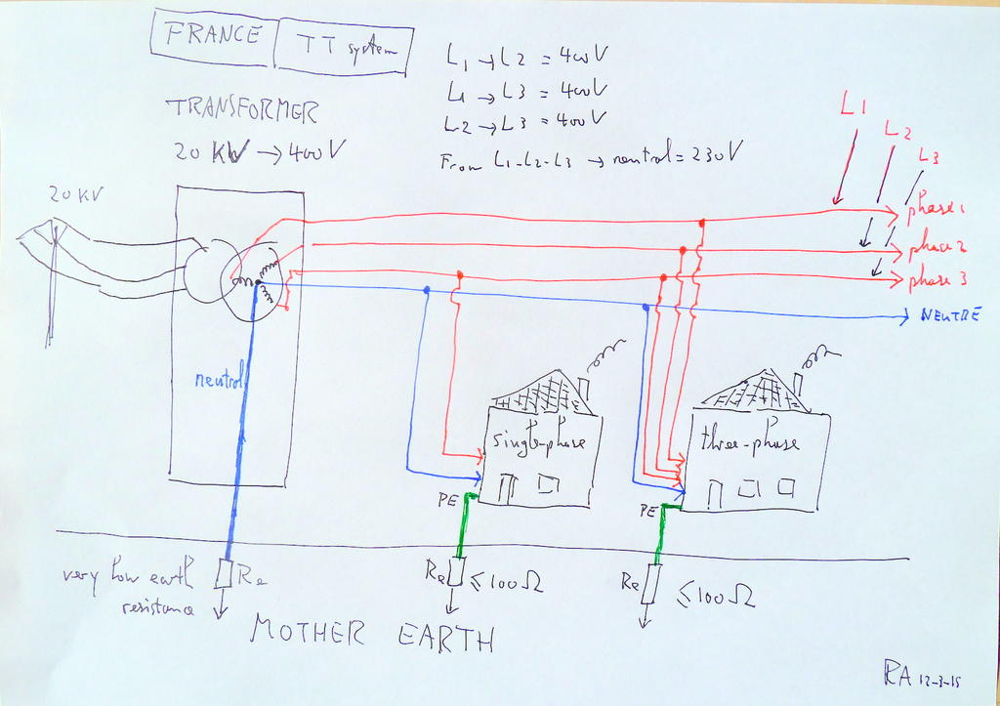
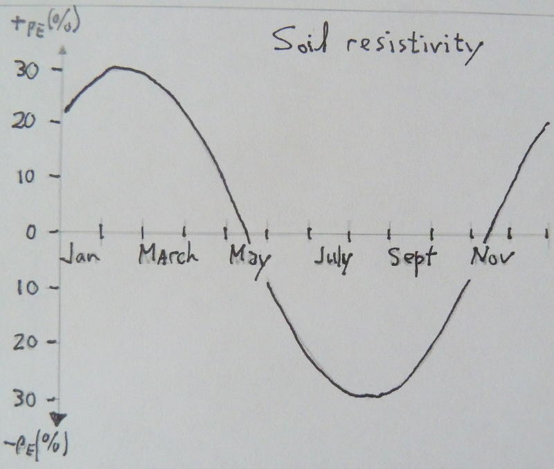
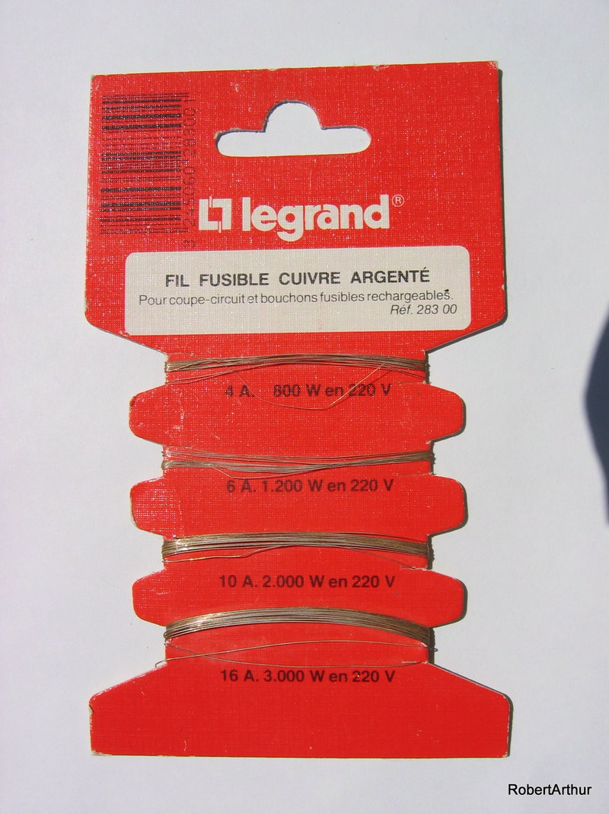
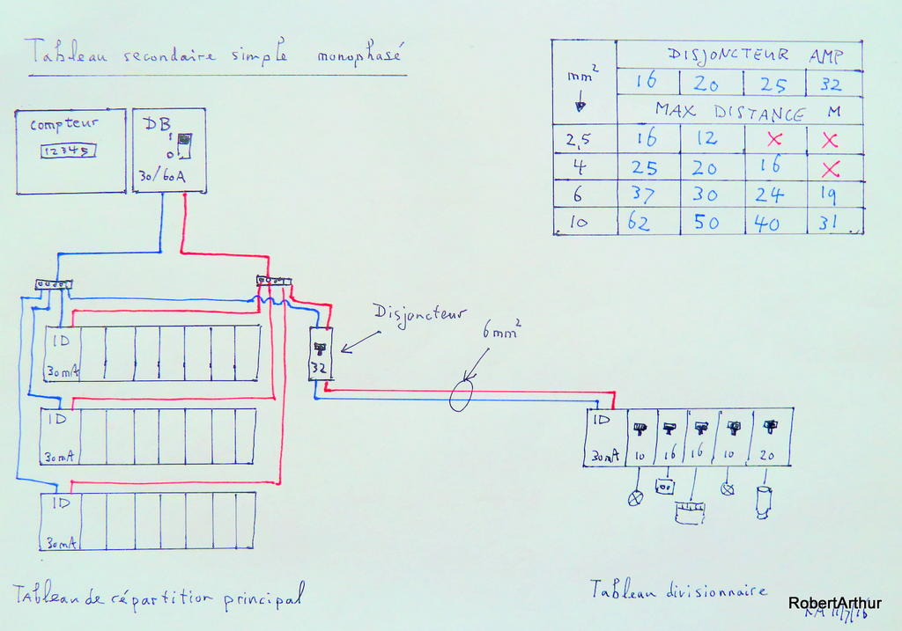
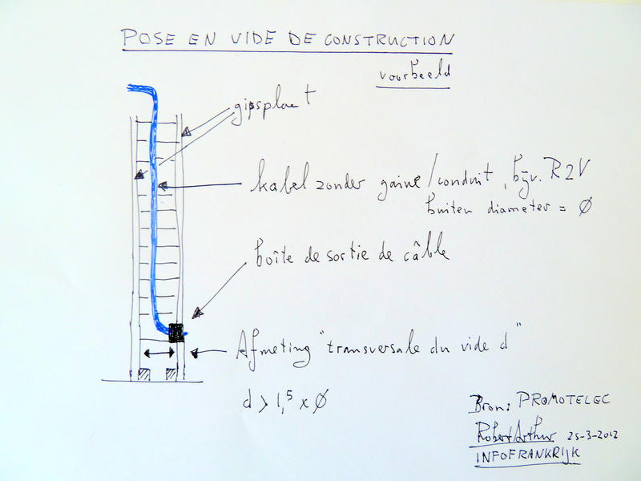
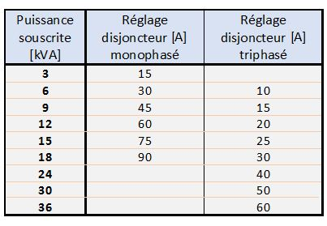
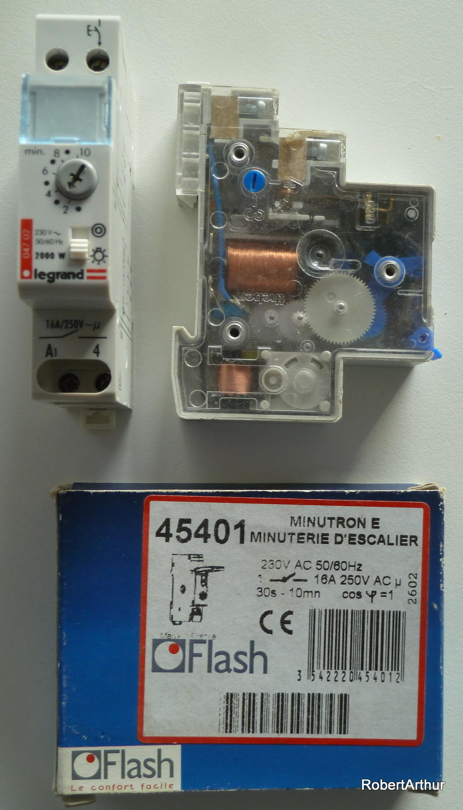
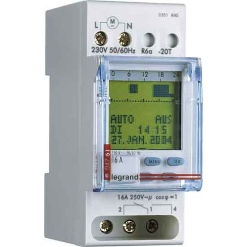

Redactie-exemplaar
Het volledige handboek, samengesteld uit de artikelserie 2008–2017 en de forumarchieven, bijgewerkt naar de NF C 15-100 (2024). Letterlijk overgenomen brontekst staat op een gele kaart.
Werkwijze: klik op een alinea om een opmerking te plaatsen. Opmerkingen worden automatisch op dit apparaat bewaard; stoppen en later verdergaan kan. Versturen gaat via de knop onderaan — dat mag ook tussentijds.
Blokken gemarkeerd „Open punt” zijn claims die nog niet uit de officiële stukken hard te maken waren — aanvulling of bronverwijzing welkom. Onderaan staan de originele handgetekende schema’s uit het archief.
Hoofdstuk 0
Inleiding: veilig klussen aan Franse elektra
Snel antwoord
Voordat u ook maar één draad aanraakt:
| ✓ | Actie |
|---|---|
| ☐ | Schakel de groep uit waaraan u werkt — of zet het hele huis stroomloos met de disjoncteur de branchement |
| ☐ | Hang een bordje op bij de groepenkast: "niet inschakelen, er wordt aan de elektra gewerkt" |
| ☐ | Controleer met een spanningszoeker of de spanning er écht af is |
| ☐ | Draag schoenen met rubberzolen; doe uw polshorloge met metalen bandje af |
| ☐ | Laat nooit blanke koperdraden "voor volgende week" uit de muur hangen |
| ☐ | Stop op tijd — de meeste ongelukken gebeuren bij "nog éven dit afmaken" |
Mag ik zelf aan mijn elektrische installatie werken?
| Land | Mag het? | Maar… |
|---|---|---|
| Frankrijk | Ja, volledig — ook complete nieuwbouw | Bij een nieuwe aansluiting of herinschakeling is een goedkeurende attestation van de Consuel vereist vóór er stroom komt [GEVERIFIEERD: consuel.com, 04-07-2026] |
| Nederland | Ja, geen wettelijk installateursmonopolie voor de eigen woning | NEN 1010 geldt via het Besluit bouwwerken leefomgeving; geen verplichte keuring, wél verzekerings- en aansprakelijkheidsrisico [formele Bbl-artikelverwijzing: NIET GEVERIFIEERD] |
| België | Ja, zelf aanleggen toegestaan | Na nieuwe aanleg of belangrijke wijziging is keuring door een erkend controleorganisme verplicht (AREI Boek 1) [GEVERIFIEERD: AREI/FOD Economie, 04-07-2026] |
De kern
De Franse elektrische installatie is iets waar je als Nederlander even aan moet wennen. De moderne groepenkasten zien er soms wat intimiderend uit: veel meer groepen dan we gewend zijn, en modules waarvan je het bestaan nooit vermoed zou hebben, met Franse benamingen die je niet meteen terugvindt in het woordenboek. Of je staat oog in oog met een groepenkast uit de jaren vijftig: een houten plank met daarop kleine zekeringhoudertjes, waarvan je even denkt dat het een achtergebleven stuk kinderspeelgoed is, totdat je ziet dat er echte stroomdraden aan vast zitten. En je een vaag vermoeden krijgt hoe de rest van de leidingen daar in de loop der jaren – onnavolgbaar voor de nieuwkomer – aan is vastgeknoopt. En je daarna duidelijk wordt waar vroeger die bordjes sèche-cheveux interdit in de wat eenvoudiger hotels voor dienden. Niet om de global warming tegen te gaan, maar om local warming te voorkomen.
Het veiligheidsritueel uit de oorspronkelijke serie, integraal — dit is het fundament onder elk volgend hoofdstuk:
Sluit bij alle werkzaamheden aan de elektrische installatie in ieder geval de stroom af van de groep waarmee je bezig gaat, of zet het hele huis stroomloos met de disjoncteur de branchement. Zeker wanneer je in de groepenkast werkzaamheden gaat verrichten. En hang even een bordje of papier op bij de groepenkast, dat er iemand met de elektra bezig is. Zo voorkom je dat iemand denkt: hé, geen stroom op dit stopkontakt, even die groep inschakelen. En iemand anders in het huis onder spanning komt te staan. Schoenen met rubber zolen zijn ook aan te bevelen; het dragen van een polshorloge met een metalen schakelbandje daarentegen minder slim wanneer je gewapend met een meetinstrument ergens in huis de aanwezige spanning of stroom wilt gaan controleren. En laat in een bestaande installatie waar de elektriciteit al is aangesloten geen blanke stukken koperdraad los ergens uit de muur hangen, onder het motto: volgende week ga ik wel verder. Of je denkt: dit kan ook wel met de stroom er op, is alleen maar een kleinigheid. Deed ik ook een keer, iets jonger nog, lette even niet op, en mijn kniptang maakte kortsluiting. Flits, klap. Op één van de snijvlakken ontbrak toen een stukje metaal. Verdampt, weggesprongen. En het was zo'n mooie tang, toen nog 'Made in Western-Germany'. Had ook in mijn oog terecht kunnen komen, ik had ook van de ladder af kunnen vallen. Niet doen dus. En omdat de meeste ongelukken gebeuren wanneer je vermoeid raakt (nog éven dit afmaken): stop op tijd. Morgen is er weer een dag.
Verdieping
De cijfers: waarom dit dossier bestaat
De oorspronkelijke serie opende met een brandcijfer uit 2012. Dat cijfer circuleert nog steeds op internet, maar is verouderd; de actuele stand is zo mogelijk nog overtuigender. Het Observatoire National de la Sécurité Électrique (ONSE, in 1995 opgericht door Promotelec en Consuel) hanteert nu de volgende kerncijfers [GEVERIFIEERD: onse.fr + Promotelec-baromètre 2024/2025, 04-07-2026]:
- 83% van de Franse woninginstallaties ouder dan vijftien jaar vertoont minstens één anomalie (baromètre 2024, op basis van 400.000 diagnostics; in 2025: 82,6%; in gemeenschappelijke delen van appartementsgebouwen zelfs 90%).
- 20 tot 35% van de woningbranden heeft een elektrische oorsprong; verzekeraars verwerken ±156.000 brandschadedeclaraties per jaar.
- Per jaar belanden ±3.000 mensen op de spoedeisende hulp door elektrisering — de helft daarvan kinderen onder de vijftien — en vallen er 30 tot 40 elektrocutiedoden.
De top-anomalieën uit de diagnostics lezen als de inhoudsopgave van dit dossier: defecte of ontbrekende aarding (64% — hoofdstuk 4), verouderd materieel (46%), risico op direct contact met spanningvoerende delen (41%), ontbrekende potentiaalvereffening in de badkamer (22%) en geschonden badkamerzones (18% — hoofdstuk 6).
De pointe uit 2012 blijft daarbij onverkort van kracht: er is geen enkele reden om "al te nostalgisch tegen o zo authentieke Franse bedrading of antieke schakelaars aan te blijven kijken. Zo snel mogelijk vervangen door iets nieuws, voor uw eigen veiligheid."
Mag ik dit zelf? Frankrijk is liberaler dan u denkt — maar niet vrijblijvend
In het Verenigd Koninkrijk, Zwitserland en Zweden is werken aan de huisinstallatie voorbehouden aan geregistreerde elektriciens. Frankrijk is op dit punt, in de woorden van de oorspronkelijke serie, "gelukkig eens wat liberaler": u mag als particulier de complete installatie zelf aanleggen. De Consuel voorziet daar uitdrukkelijk in — de auteur van de werken vraagt zelf de attestation aan en tekent ervoor; particuliere zelfbouwers krijgen vrijwel altijd een controlebezoek, bekende professionals steekproefsgewijs [GEVERIFIEERD: consuel.com, 04-07-2026]. Hoofdstuk 8 behandelt de hele procedure.
Maar "liberaal" betekent niet "zonder gevolgen". Twee mechanismen zorgen ervoor dat knoeiwerk vroeg of laat aan het licht komt:
- Het diagnostic électrique. Bij verkoop én verhuur van een woning met een installatie ouder dan vijftien jaar is een veiligheidsdiagnostic verplicht (geldig 3 jaar bij verkoop, 6 jaar bij verhuur). Elke gerapporteerde anomalie is een onderhandelingsargument voor de koper; bij verhuur kan een ernstige anomalie de verhuurbaarheid blokkeren [GEVERIFIEERD: service-public.gouv.fr F18692, 04-07-2026]. Hoofdstuk 8 gaat hier dieper op in.
- De verzekering. Bij brand met een aantoonbaar non-conforme installatie als oorzaak kan de verzekeraar de uitkering ter discussie stellen — zie het kader hieronder.
Op fora duikt met enige regelmaat het tegenovergestelde geluid op: "Vanaf de meter mag je er zelf een bende van maken. Geen controle. Dus doe je voordeel." (forumdeelnemer, nederlanders.fr). Dat is precies de misvatting die dit dossier wil ontkrachten: er is wel degelijk controle — alleen komt die niet vandaag, maar bij de verkoop, de verhuur of de schadeclaim.
De Hollandse reflex
Door het hele dossier loopt één rode draad die we hier meteen benoemen: de aanname van veel Nederlanders (en Vlamingen) dat de eigen spullen, normen en gewoonten beter zijn dan de Franse. Soms klopt dat (kwaliteit is merkgebonden, niet landgebonden — een Wago-klem is in beide landen een Wago-klem), maar als installatieprincipe pakt het verkeerd uit: Nederlandse randaarde-contactdozen, meegenomen fornuisaansluitingen of Britse doorstroomverwarmers zijn in Frankrijk non-conform, en non-conformiteit komt hard aan op het moment dat het diagnostic électrique of de schade-expert langskomt. Per hoofdstuk laat het NL–BE–FR-blok zien wáár de systemen werkelijk verschillen — feitelijk, zonder NL-bashen en zonder FR-verheerlijking.
Ter relativering: Nederland kende exact dezelfde saneringsslag, alleen een generatie eerder. Een lezer op het IF-forum herkende alles: "zo ongeveer ging het mij ook toen in 1977 in mijn net gekochte oude huis de elektra werd afgekeurd." (forumdeelnemer, IF-forum, 2014)
NL–BE–FR
| Nederland | België | Frankrijk | |
|---|---|---|---|
| Norm | NEN 1010 | AREI/RGIE (volledig herzien per 01-06-2020, drie boeken) | NF C 15-100 (sinds 2024 een serie van 21 delen — zie hoofdstuk 8) |
| Zelf aanleggen | Toegestaan | Toegestaan | Toegestaan |
| Verplichte keuring particulier | Nee | Ja — erkend controleorganisme na nieuwe aanleg of belangrijke wijziging | Alleen Consuel-attestation bij nieuwe aansluiting/herinschakeling |
| Keuring bij verkoop | Nee (wel APK-achtige initiatieven, vrijwillig) | Keuringsverslag verplicht bij verkoop | Diagnostic électrique verplicht bij installatie > 15 jaar |
[GEVERIFIEERD: V14/V8/V9-bronnen, 04-07-2026; NL-Bbl-artikelverwijzing en BE-keuringsdetails bij verkoop: NIET GEVERIFIEERD — aanvullen vóór publicatie]
Uit de praktijk
De verzekeringswaarschuwing. Op het forum van nederlanders.fr vatte een deelnemer het Franse uitgangspunt kernachtig samen: "Nul n'est censé ignorer la loi (…) een verzekeringsmaatschappij is in haar recht om jou helemaal niets uit te betalen als er brand zou komen." — forumdeelnemer, nederlanders.fr. De juridische finesses verschillen per polis en per geval, maar de kern staat: wie zelf klust, klust op eigen verantwoordelijkheid — en die verantwoordelijkheid is verzekeringstechnisch geen dode letter.
1977. "Zo ongeveer ging het mij ook toen in 1977 in mijn net gekochte oude huis de elektra werd afgekeurd." — forumdeelnemer, IF-forum, 2014. De Franse saneringsslag die u in uw maison de campagne aantreft, is dezelfde die Nederland in de jaren zeventig doormaakte. Geen reden voor dedain — wel voor gereedschap.
Tijdgevoelig — geverifieerd 04-07-2026
- Veiligheidscijfers: ONSE/Promotelec-baromètre 2024 (83% anomalie) en 2025 (82,6%). Bij de jaarlijkse onderhoudsbeurt van dit dossier het nieuwste baromètre-jaar overnemen van onse.fr.
- Het oorspronkelijke openingscijfer (250.000 woningbranden, 80.000 met elektra-oorzaak, anno 2012) is vervangen door de actuele ONSE-systematiek en dient niet meer geciteerd te worden.
Hoofdstuk 1
Aansluiting, meter en contract
Snel antwoord
| Uw situatie | Waar moet u zijn |
|---|---|
| De stroom valt steeds uit zodra er twee grote apparaten tegelijk aanstaan | Puissance souscrite te laag óf scheve fasebalans bij driefase — zie hieronder |
| U heeft een oude driefase-aansluiting met klein vermogen | Overweeg ombouw naar monophasé — zie de afweging tri/mono |
| U wilt weten wat voor aansluiting u heeft | Kijk op de meter of de disjoncteur de branchement: "230 V" = monophasé, "3 × 230" = triphasé; de leveranciersfactuur vermeldt de puissance souscrite in kVA |
| U betaalt naar uw gevoel te veel | Controleer tariefoptie (Base / Heures Creuses / Tempo) én de kVA-trap van uw abonnement |
| Nieuwbouw of heraansluiting | Eerst Consuel-attestation (hoofdstuk 8), dan pas sluit Enedis aan |
De drie kernbegrippen van dit hoofdstuk: - Puissance souscrite — het maximale vermogen (in kVA) dat uw abonnement toestaat; erboven schakelt alles uit. - Monophasé / triphasé — één fase van 230 V, of drie fasen met 400 V ertussen. - Linky — de slimme meter die inmiddels de standaard is en de bewaking van uw puissance souscrite elektronisch (en streng) uitvoert.
De kern
De energieproducent, meestal dus de EDF, en de energietransporteur ENEDIS, leveren tegenwoordig voor de kleinere vermogens bij particulieren het liefst een enkelfasige 230 Volt (monophasé) aansluiting. Dat zijn twee draden: une phase et un neutre. In het verleden werd op het platteland gezien de grote afstanden vaak een driefase (triphasé) aansluiting geleverd. Drie fasedraden en één neutrale draad. Op elk van die fasedraden staat 230 Volt ten opzichte van de neutrale draad en tussen die fasedraden staat een levensgevaarlijke spanning van 400 Volt. Het ontwerpen van zo'n driefase-installatie vergt een zorgvuldige berekening van de belasting die je op elk van die fasedraden aansluit. Wordt slechts één daarvan te zwaar belast, dan treedt de stroombeveiliging van de hoofdschakelaar (disjoncteur de branchement) in werking en zit het hele huis zonder stroom.
Tot en met deze disjoncteur de branchement (DB) is het côté fournisseur of domaine publique. Dus handen af voor de bricoleur of de door hem ingehuurde électricien. Daar mag alleen de netbeheerder wat doen, en dus de bekende loodjes (nu van plastic) om dat duidelijk te maken. Maar vanaf de uitgang van de hoofdschakelaar is alles côté client, domaine privé d'utilisateur. Daar begint de verantwoordelijkheid van de eigenaar en zijn de NF C 15-100-regels van toepassing.
En de kernuitleg waarom een kleine driefase-aansluiting zo lastig is, in een forumuitleg van later datum:
Het lastige met die kleine triphasé-aansluitingen is dat de disjoncteur de branchement (of tegenwoordig LINKY) de boel zonder stroom zet wanneer er maar op één fase de grens van 15 ampère wordt overschreden. Bij een monophasé-aansluiting van dezelfde puissance souscrite van 9 kVA kom je pas in de gevarenzone boven 45 ampère totaal. Kortom: meer headroom, meer speelruimte.
— Rob van der Meulen, forum nederlanders.fr, 11-11-2021
Verdieping
Waar zit wat: type 1, type 2 en de tussenvorm
De plaatsbepaling uit de oorspronkelijke serie blijft de betrouwbaarste gids in het veld : staat het huis minder dan 30 meter van de erfgrens, dan komt de netbeheerder rechtstreeks binnen (branchement type 1) en hangen zekering, meter en hoofdschakelaar binnenshuis — op een houten montagebord (le panneau de contrôle) of, sinds medio jaren negentig, in de kunststof gaine technique de logement (GTL). Bij meer dan 30 meter staan meter en hoofdschakelaar buiten aan de weg in een kastje (type 2) en loopt de toevoer in principe ondergronds naar het huis. Daarnaast bestaat de tussenvorm van vóór eind jaren tachtig: zekeringen en meter bij het hek, de disjoncteur de branchement pas binnen bij de groepenkast. De groepenkast zelf heet tableau électrique, tableau de répartition of tableau de distribution — drie namen voor hetzelfde ding.
Linky is het uitgangspunt
Het oorspronkelijke hoofdstuk heette "Linky komt eraan". Dat station zijn we gepasseerd: Linky is de operationele standaard van het Franse net. De actuele heures-creuses-hervorming (zie het tijdgevoelige blok) wordt door Enedis volledig op afstand doorgevoerd, inclusief het meeschakelen van de contacteur jour/nuit voor de boiler; een wissel van tariefoptie is gratis mét Linky tegenover 56,72 € zonder [GEVERIFIEERD: Enedis/service-public.gouv.fr, 04-07-2026]. De stand van de uitrol: circa 95% van de huishoudens, 37,6 miljoen meters (Enedis, persbericht feb 2026). Wie de meter blijft weigeren betaalt sinds 01-08-2025 (TURPE 7) een vaste beheerbijdrage van 6,48 € HT per twee maanden, plus 4,14 € HT extra per twee maanden wanneer langer dan een jaar geen meterstand is doorgegeven; alleen bij technische onmogelijkheid vervallen deze kosten. Wettelijke basis van de uitrolplicht: art. L341-4 Code de l'énergie [GEVERIFIEERD: Enedis + CRE-deliberatie 2025-78, 04-07-2026].
Wat er voor de klusser verandert, werd al scherp beschreven toen de meter nog nieuw was: de oude thermisch-magnetische disjoncteur de branchement verdroeg een overbelasting van tientallen procenten soms een uur lang en haalde onverstoorbaar de schouders op over de aanlooppiek van een wasmachine of waterkoker. De elektronica van Linky reageert veel sneller en bewaakt de puissance souscrite "met overgave" . Wie na plaatsing van een Linky merkt dat het huis er vaker uitklapt dan voorheen, is dus niet gek — de marge van de oude techniek is weg. De handbediende hoofdschakelaar én de 500 mA-aardlekfunctie van de DB blijven overigens gewoon bestaan (hoofdstuk 2).
Van draaischijf naar chip: wat er in uw Franse meterkast hangt
In een Franse meterkast kunnen vier heel verschillende toestellen hangen, die samen ruim honderd jaar meettechniek beslaan. Ze verschillen niet alleen in uiterlijk, maar in de manier waaróp ze meten — vier meters, drie meettechnieken. Wie weet welke van de vier bij hem hangt, begrijpt meteen waarom de ene meter geduldig is en de andere onverbiddelijk.
De draaischijf
De klassieke elektromechanische meter (compteur à disque, type Ferraris): een aluminium schijf die sneller draait naarmate u meer verbruikt, met een telwerk erachter. Geen elektronica, geen communicatie — de meteropnemer kwam langs.
De elektronische meter
De eerste digitale generatie (compteur électronique): meet statisch, zonder bewegende delen, en toont het verbruik op een display. Nog altijd zonder communicatie op afstand — de stand werd afgelezen of doorgegeven.
Linky G1
De eerste communicerende generatie: meet statisch én stuurt de standen over het stroomnet naar Enedis via CPL (courant porteur en ligne). Hiermee vervalt de meteropnemer en gaan tariefwissels en het bewaken van de puissance souscrite op afstand.
Linky G3
De huidige communicerende generatie: dezelfde statische meting, maar met een robuustere CPL-verbinding over een breder frequentiebereik. Dit is de meter die vandaag standaard wordt geplaatst.

Cijfers en juridische lijn
- Uitrol: circa 95% van de huishoudens is aangesloten; dat komt neer op 37,6 miljoen meters.
- Weigeraars sinds 1 augustus 2025 (TURPE 7): een vaste beheerbijdrage van € 6,48 excl. btw per twee maanden, plus € 4,14 excl. btw per twee maanden wanneer langer dan een jaar geen meterstand is doorgegeven (grondslag: CRE-beraadslaging 2025-78).
- Juridische lijn van de uitrolplicht: Europese richtlijn 2009/72/EG van 13 juli 2009, in Frankrijk uitgewerkt in het decreet van 31 augustus 2010 en verankerd in de wet van 17 augustus 2015 (artikel 7).
- Techniek van de CPL-communicatie: Linky G3 werkt in de band 35,9–90,6 kHz; Linky G1 op 63,3 en 74 kHz. De aansluitklemmen van de meter zijn geschikt tot 90 A.
- Circa 300.000 proefmeters zijn in de aanloop uitgezet in de regio Lyon en in het departement Indre-et-Loire.
- Tijdens die proef zouden 8 toestellen gesmolten zijn.
- Het ANSES-advies van 7 juni 2017 over de blootstelling gaat over de CPL-frequenties hierboven; de precieze conclusie en reikwijdte moeten nog tegen de primaire bron worden gelegd.
- De vragen over brandveiligheid en over de fijnmazigheid van de verbruiksgegevens (privacy) horen bij dit blok, maar zijn hier bewust niet als vaststaand gepresenteerd.
Feiten gecontroleerd op 23 juli 2026.
Puissance souscrite: het abonnement bepaalt uw plafond
Elektriciteitsaansluitingen in Frankrijk kennen altijd een maximaal af te nemen vermogen dat wordt bepaald door het abonnement, de zogenaamde puissance souscrite. Als u meer vermogen afneemt dan slaat de hoofdschakelaar uit en zit het gehele huishouden zonder stroom. Niet fijn, zeker niet als de hoofdschakelaar ergens ver weg buiten in een kastje zit.
— Rob van der Meulen, IF-forum, 2013
Dit is hét structuurverschil met Nederland en België: in Frankrijk koopt u met uw abonnement een vermogensplafond, in trappen (kVA). De abonnementsreeks monophasé loopt 3–6–9–12 kVA; triphasé begint bij 9 kVA en loopt door tot 36 kVA (gangbaar 9-12-18-24-30-36).
Twee beleidsfeiten die forumkennis van vóór 2025 achterhalen, beide inmiddels hard geverifieerd:
- Boven 12 kVA bestaat er voor nieuwe aansluitingen geen monophasé. Enedis' eigen aansluitbarema is er expliciet over: "la puissance maximum de la BT monophasé est de 12 kVA" — wie meer vraagt, krijgt een raccordement van 36 kVA triphasé aangeboden. De forummelding uit 2020 klopte dus. Oudere woningen met een historische mono-aansluiting van 13–18 kVA behouden die (aanvragen om zo'n bestaande zware mono-aansluiting te wijzigen worden zelfs "automatisch geweigerd" tenzij aan voorwaarden voldaan), maar nieuw krijgt u het niet meer [GEVERIFIEERD: Enedis barème raccordement + référentiel, 04-07-2026].
- De Base-optie van het gereguleerde Tarif Bleu is in afbouw. Sinds 01-02-2025 kunnen nieuwe klanten met 9 kVA of meer bij het Tarif Bleu geen Base meer kiezen (alleen HP/HC of Tempo); per 01-02-2026 is de hele band 9–36 kVA "mis en extinction" — EDF's eigen formulering — en bestaande Base-klanten met 18 kVA of meer worden uiterlijk 01-02-2027 automatisch omgezet naar HP/HC. Let op de nuance die veel berichtgeving mist: dit raakt uitsluitend het gereguleerde tarief; marktaanbiedingen (ook van EDF zelf) bieden Base nog voor alle vermogens [GEVERIFIEERD: EDF particulier.edf.fr + CRE-deliberatie 2026-06 + Que Choisir, 04-07-2026]. Voor de lezer met warmtepomp- of laadpuntplannen (9-12 kVA) betekent dit: bij het Tarif Bleu wordt HP/HC de facto verplicht — reden te meer om de hervormde daluren (hierboven) serieus te nemen.
Een fabeltje kan wél meteen de wereld uit : een driefase-aansluiting is niet duurder dan een enkelfasige. Voor de vaste lasten telt uitsluitend de totale puissance souscrite in kVA.
Tri of mono? De afweging
Voor wie een oude, kleine triphasé-aansluiting heeft (op het platteland eerder regel dan uitzondering), is de kernvraag: ombouwen naar monophasé of niet. De elementen:
- Headroom. Zie het citaat hierboven: 9 kVA mono geeft één ruime emmer van 45 A; 9 kVA tri geeft drie emmertjes van 15 A die elk afzonderlijk kunnen overlopen. "Een beetje wasmachine plus droger op één fase is al snel te veel (…) anders loopt men continu tegen de grens aan, en zit het hele huis weer in het donker." — IF-forum.
- Echte driefase-apparaten. Alleen wie een driefasen-werktuig heeft (grote zaagtafel, sommige warmtepompen) heeft triphasé werkelijk nodig — en juist de warmtepomp-afweging is anno 2026 aan het kantelen; zie hoofdstuk 7.
- Netcapaciteit. Enedis hoeft een ombouwverzoek niet te honoreren: monophasé vergt dikkere aanvoer, en op dun bekabelde plattelandsnetten kan de spanningsval dan buiten de toegestane band lopen — Enedis dimensioneert de huisaansluiting zelf al op maximaal 1% spanningsval, en het bovenliggende net moet mee kunnen.
- Kosten — en het cruciale onderscheid. Een wijziging van de puissance souscrite binnen uw bestaande aansluiting is administratief: op afstand via Linky, ±4,28 € (tariefoptie wisselen is met Linky zelfs gratis). Een wijziging van het raccordement zelf — mono ↔ tri, of boven het fysieke plafond uit — is een fysieke ingreep van Enedis op offerte (Catalogue des Prestations, prestatie F180 bij verzwaring): van een bescheiden ingreep in de meterkast tot een nieuwe kabel vanaf het net bij een type 2-aansluiting, op kosten van de eigenaar [GEVERIFIEERD: Enedis référentiel + barème, 04-07-2026].
Tariefopties: Base, Heures Creuses, Tempo
De klassieke keuze is Base (één tarief) of Heures Pleines/Heures Creuses (acht daluren per etmaal tegen lager tarief, oorspronkelijk bedoeld om de naoorlogse elektrische boilers de nacht in te sturen). De oude vuistregel dat HP/HC pas loont vanaf 50–60% verbruik in de daluren stamt van vóór de grote hervorming die nu loopt — reken dus niets meer met oude drempels; zie het tijdgevoelige blok. Tempo kent goedkope blauwe, gemiddelde witte en zeer dure rode dagen, met de doelgroepomschrijving in het kader hieronder.
De boileraansturing bij HP/HC loopt via de contacteur jour/nuit — het PULSADIS-signaal over het net dat "toch al decennia" de boiler op afstand in- en uitschakelt, en dat met Linky zijn moderne opvolger heeft gekregen. De techniek daarvan staat in hoofdstuk 6.
Wie tot slot wil weten hoe groen de gekozen "groene" leverancier werkelijk is: de forumarchieven relativeerden het mechanisme van de garanties d'origine al eens droogjes met de natuurkundige nuchterheid "dans le réseau, les électrons vont au plus proche" (nederlanders.fr, mei 2024). De actuele Franse productiemix:
.
NL–BE–FR
| Nederland | België | Frankrijk | |
|---|---|---|---|
| Vermogensbegrenzing | Fysieke aansluitwaarde (bijv. 1×35 A of 3×25 A); geen abonnementsplafond dat het huis uitschakelt | Fysieke aansluitwaarde; geen kVA-abonnementstrappen zoals in FR | Puissance souscrite per abonnement: te veel vragen = alles uit |
| Wie bewaakt het plafond | Hoofdzekering (smelt/valt pas bij echte overbelasting) | Hoofdzekering/automaat | Linky, elektronisch en vrijwel zonder marge |
| Meter | Slimme meter uitgerold; geen afschakelfunctie op contractvermogen | Digitale meter (uitrol gewestelijk) | Linky, eigendom Enedis, schakelt zelf af én weer in |
| Dag/nachtstroom | Vrij tarief per leverancier | Dag/nacht via meter | HP/HC-vensters worden per aansluitpunt door Enedis toegewezen — u kiest ze niet zelf |
NL/BE-details in deze tabel zijn beschrijvend bedoeld; de FR-kolom is geverifieerd (V10/V11). Voor NL/BE-aansluitwaarden en meteruitrol geldt:
. Voor de Nederlander is de kernboodschap: neem uw NL-intuïtie ("3×25 A is normaal, de hoofdzekering is geduldig") niet mee naar Frankrijk — hier bepaalt het abonnement het plafond, en de bewaking is elektronisch en onverbiddelijk.
Uit de praktijk
Parallelgeschakelde draden. Een lezer meldde dat Enedis bij hem, in plaats van een nieuwe kabel over 500 meter te leggen, bestaande draden parallel had geschakeld. Rob: "dat deed de EDF vóór de afsplitsing naar ERDF/ENEDIS ook regelmatig. Maar naderhand in het rode boekje van hoe het liever niet moet: mocht één draad het begeven, dan loopt het volle vermogen door één fasedraad — oververhitting." — Rob van der Meulen, forum nederlanders.fr, 2021.
Bouwstroom en de wisseling van leverancier. "Ik heb nooit zonder stroom gezeten. Bouwstroom via EDF, na de Consuel-keuring kwam ERDF de teller en hoofdschakelaar plaatsen (…) omdat ik voor een andere (groene) leverancier koos was het wachten op de meteropnemer." — Anton Noë, IF-forum, topic "Consuel-keuring van elektra", 2013.
Tempo-wijsheid. "Voor de bezitters van een tweede huis die overwinteren op Nova Zembla en vanaf het voorjaar in hun verwarmde Franse zwembad willen duiken is het Tempo-tarief ideaal — alle zeer dure rode dagen vallen immers in het koude jaargetijde." — Rob van der Meulen, forum nederlanders.fr.
Tijdgevoelig — geverifieerd 04-07-2026
De grootste heures-creuses-hervorming sinds de invoering. [GEVERIFIEERD: Enedis (2 officiële pagina's), service-public.gouv.fr A18476, CRE-deliberatie 08-01-2026 via convergente bronnen — 04-07-2026]
- Vanaf 1 november 2025 verschuift Enedis stapsgewijs de daluren van 14,5 miljoen HP/HC-klanten (11 miljoen worden feitelijk geraakt; 3,5 miljoen zaten al goed). Fase 1 (nov 2025 – jun 2026): 1,7 miljoen klanten; fase 2 (dec 2026 – okt 2027): 9,3 miljoen, mét seizoensdifferentiatie; professionals sluiten in 2027 af.
- Nieuwe systematiek: nog steeds 8 daluren per dag, maar minimaal 5 aaneengesloten 's nachts (23h–7h) en maximaal 3 overdag (11h–17h); in de zomer (1/4–31/10) mét middagvenster (zonnestroom), in de winter vooral 's nachts. De oude vensters 7h–11h en 17h–23h verdwijnen. Enedis wijst de vensters per aansluitpunt toe — er valt niets te kiezen; de leverancier informeert minimaal één maand vooraf. Linky en de contacteur jour/nuit schakelen automatisch mee.
- CRE-deliberatie 08-01-2026: het wintervenster 11h–14h is voor nieuwe klanten weer toegestaan. Tempo blijft ongewijzigd (22h–6h landelijk).
- Consequentie: elke oude rentabiliteitsvuistregel voor HP/HC (waaronder de 50–60%-drempel die jaren op de fora circuleerde) moet opnieuw worden doorgerekend met de eigen nieuwe vensters.
- Tariefoptie-wissel: gratis met Linky, 56,72 € zonder.
- Base-optie Tarif Bleu: dicht voor nieuwe klanten ≥ 9 kVA sinds 01-02-2025, hele band 9–36 kVA in extinction per 01-02-2026; marktaanbiedingen bieden Base nog wél. Mono > 12 kVA: bestaat niet meer voor nieuwe aansluitingen.
Hoofdstuk 2
De hoofdschakelaar
Snel antwoord
| Vraag | Antwoord |
|---|---|
| Hoe zet ik in nood álles uit? | Met de disjoncteur de branchement (DB): de grote schakelaar bij de meter, binnenshuis |
| Wat doet dat ding nog meer? | Stroombegrenzing op uw puissance souscrite én (meestal) een 500 mA-aardlekfunctie |
| Beschermt hij personen? | Nee. 500 mA is te grof voor persoonsbescherming; daarvoor dienen de 30 mA-aardlekschakelaars in de groepenkast (hoofdstuk 3) |
| Hoe zwaar staat hij afgesteld? | Kijk in het venstertje: 15/30/45/60/75/90 A — corresponderend met 3 t/m 18 kVA |
| Mag ik eraan sleutelen? | Aan de verzegelde (netbeheerders)kant: nee. De DB is de grens tussen domaine public en domaine privé (hoofdstuk 1) |
De kern
De Franse hoofdschakelaar verschilt van de Nederlandse: dat is alleen maar een mechanische schakelaar. De Franse disjoncteur de branchement vervult minimaal twee functies: aan/uitschakelen en tevens stroombegrenzing. Omdat het uitschakelen in noodgevallen snel moet kunnen gebeuren (coupure d'urgence) behoort een dergelijke disjoncteur dus altijd binnenshuis aanwezig te zijn.
Tegenwoordig is dat meestal een hoofd/aardlekschakelaar die bij een foutstroom van 500 milliampère in werking treedt (I∆n = 500 mA). Dat is een extra elektrische veiligheid, maar voor de bescherming van personen volstrekt onvoldoende. De rest van de installatie moet daarom met aardlekschakelaars beveiligd zijn die bij 30 mA de stroom uitschakelen. (…) Om uw technisch Frans met nog een mooi wat abstracter woord uit te breiden: zo'n hoofdschakelaar wordt ook wel Appareil Général de Commande et de Protection (AGCP) genoemd.
Verdieping
De drie functies op een rij
- Schakelen. De DB is de noodstop van het huis: één handbeweging en alles is spanningsloos. Gebruik hem ook zo — bij elke ingreep in de groepenkast (hoofdstuk 0). Dat de DB voor die noodfunctie binnenshuis (of in elk geval direct bereikbaar) hoort te zitten, is de klassieke regel uit de oorspronkelijke serie; de exacte formulering in de actuele normserie is niet opnieuw gecontroleerd
. 2. Stroombegrenzing. De DB is door de netbeheerder afgeregeld op uw puissance souscrite. In het uitleesvenstertje staat de afregeling in ampère: 15, 30, 45, 60, 75 of 90 A — corresponderend met 3, 6, 9, 12, 15 en 18 kVA (monophasé). Let op: dit beschrijft het geïnstalleerde materieelpark; welke trappen voor nieuwe contracten nog bestaan is een contractkwestie (hoofdstuk 1). 3. Aardlekbeveiliging 500 mA. Een brandbeveiliging voor de installatie als geheel — géén persoonsbescherming. De persoonsbescherming (30 mA) zit een verdieping lager, in de groepenkast, en is daar verplicht voor alle circuits [GEVERIFIEERD: V2-bronnen, 04-07-2026].
Het materieel herkennen
De determinatiegids uit de oorspronkelijke serie blijft goud voor de tweedehands-huizenkoper : monophasé-types dragen het opschrift "Nb de pôles: 2, pôle protégé: 1"; driefase-types "Pôles: 4 / Protégés: 3". De oudere driefase-modellen (vóór 1996) hebben drie ronde "patrijspoortjes" — het totaal aan ampères is driemaal de patrijspoortwaarde; nieuwere modellen één venster. De rechthoekige kastjes (o.a. Merlin Gerin) hebben rode en zwarte aan/uit-knoppen plus een witte bouton de test voor de aardlekfunctie; de kleinere lichtgrijze (o.a. Baco) een draaischakelaar met lichtblauw testknopje. Druk die testknop af en toe eens in — dat is waar hij voor zit.
De tolerante oude techniek versus Linky
De thermisch-magnetische DB is een goedmoedig apparaat: langdurige overbelasting van dertig procent of meer wordt enige tijd verdragen (tot het thermische mechanisme ingrijpt), kortsluiting wordt binnen een seconde afgeschakeld, en over de inschakelpiek van een wasmachine doet hij niet moeilijk. Sinds de stroombegrenzing feitelijk door de Linky-elektronica wordt uitgevoerd, is die marge verdwenen (hoofdstuk 1). De DB zelf blijft ook naast een Linky gewoon aanwezig en behoudt schakel- en aardlekfunctie [GEVERIFIEERD: V10, 04-07-2026].
Van hoofdschakelaar naar groepenkast
Voor de verbinding DB → tableau gelden dimensioneringsregels: hoe langer de afstand en hoe groter het vermogen, des te dikker de geleiders, om de spanningsval binnen de perken te houden. De klassieke Promotelec-tabellen geven per lengte en vermogen de vereiste doorsnede. De actuele tabelwaarden voor de 2024-normserie zijn nog niet gecontroleerd
.
NL–BE–FR
| Nederland | België | Frankrijk | |
|---|---|---|---|
| Hoofdschakelaar | Mechanische schakelaar (of alleen hoofdzekering) zonder begrenzingsfunctie | Hoofdautomaat/differentieel 300 mA aan het begin van de installatie (AREI) | DB = schakelaar + begrenzer + 500 mA-aardlek in één, afgeregeld op het abonnement |
| Persoonsbescherming | 30 mA-aardlekschakelaars in de groepenkast | 30 mA voor natte ruimten e.a. (AREI) | 30 mA-ID's verplicht voor alle circuits (hoofdstuk 3) |
| Eigendom/zegels | Netbeheerder tot en met meter | Netbeheerder tot en met meter | Netbeheerder tot en met DB — verzegeld |
BE-details (300 mA-hoofddifferentieel, 30 mA-toepassingen): beschrijvend; exacte AREI-artikelen
. FR-kolom: V2/V10.
Uit de praktijk
De patrijspoortjes. Wie een oude driefase-DB met drie venstertjes aantreft, leest daar direct de fasebalans-erfenis van het huis af: driemaal een klein getal. Reken even mee: 3 × 10 A bij 230 V is nominaal 6,9 kVA — maar zoals hoofdstuk 1 liet zien, heeft u daar per fase maar 10 A van. De waterkoker naast de opwarmende wasmachine is dan al te veel. Dit ene venstertje verklaart negen van de tien "onverklaarbare" stroomuitvallen in oude plattelandshuizen. (Redactionele toelichting op Robs determinatiegids.)
Tijdgevoelig — geverifieerd 04-07-2026
- Geen tariefgebonden feiten in dit hoofdstuk. De verwijzing naar de Promotelec-spanningsvaltabellen en de bereikbaarheidseis van de DB staan open op de verificatielijst (zie reviewpakket) en worden vóór publicatie gedateerd.
Hoofdstuk 3
De groepenkast
Snel antwoord
De actuele basisregels voor het tableau (2024-normserie):
| Regel | Stand [GEVERIFIEERD: V2-bronnen, 04-07-2026] |
|---|---|
| Aardlekbeveiliging | Alle circuits achter een aardlekschakelaar (ID/DDR) van ≤ 30 mA |
| Minimum aantal ID's | 2 per woning; verlichting- en stopcontactcircuits verdeeld over minstens 2 ID's (valt er één uit, dan zit u niet volledig in het donker) |
| Maximum per ID | 8 circuits, ongeacht kaliber |
| Typen | Minimaal 1 × type A (kookplaat, wasmachine, EV-laadpunt mono); nieuw sinds 2024: type F verplicht vóór circuits met éénfasige frequentieregelaar (warmtepomp, airco, zwembadpomp); driefase-varianten daarvan: type B |
| Vlamboogbeveiliging (AFDD) | Aanbevolen, niet verplicht — verwar dit niet met de wél verplichte type F |
| Reserveruimte | 20% vrije plaats, minimaal 6 modules |
| Zekeringen | Niet meer toegestaan bij nieuwbouw/renovatie — alleen automaten (disjoncteurs), dubbelpolig |
| Licht en stopcontacten | Altijd gescheiden circuits — nooit samen op één automaat |
De kern
Het litteken-verhaal uit de oorspronkelijke serie, onverkort geldig voor iedereen die een oude installatie op de schop neemt:
Bij het op de schop nemen van een oude elektrische installatie loop je al snel op tegen het gegeven dat de neutrale draden overal met elkaar verbonden zijn. Te beginnen in de groepenkast en daarna verderop in de bedrading. En voor een goede werking van aardlekschakelaars is het essentieel dat zij geen 'zicht' hebben op bedrading en groepen die achter een andere ID zijn aangesloten. Vaak uren zoek- en ontvlechtwerk.
De historische gelaagdheid die u in het veld aantreft, van snuifdoos tot automaat:
In de oudste groepenkasten die je tegen zou kunnen komen – een houten plank met 'kinderspeelgoed' erop – zitten zekeringen die bestaan uit een miniatuur porseleinen houder waar aan de onderkant een stukje weerstandsdraad is vastgeschroefd (coupe circuit à tabatière). (…) Ooit was het de goedkoopste manier om een groepenkast in te richten, met zekeringen. Voor een nog oudere generatie al te duur, die was gewend met weerstanddraad un plomb sauté zelf te repareren.
En het Franse aansluit-eigenaardigheidje dat elke Nederlandse klusser minstens één keer verrast:
Op de Franse disjoncteurs wordt de phase (rood) op het rechter aansluitpunt bevestigd, en de neutre (blauw) aan de linkerkant, waar dan ook keurig een N staat. In Nederland is dat precies omgekeerd. En waar we in Nederland vrolijk op één disjoncteur zowel lichtpunten als stopcontacten aansluiten, is dit in Frankrijk nadrukkelijk verboden.
Verdieping
Hoe de stroom door de kast loopt
Vanaf de disjoncteur de branchement komen de dikke aanvoerdraden binnen op twee aansluitstrippen (borniers): rood voor de fase, blauw voor de nul. Daarvandaan worden de aardlekschakelaars (interrupteurs différentiels, ID) gevoed, en achter elke ID hangen de automaten (disjoncteurs divisionnaires) die elk één circuit beveiligen. De ID bewaakt het verschil tussen heen- en teruggaande stroom: lekt er ≥ 30 mA weg — bijvoorbeeld via een mens — dan schakelt hij af. In de oorspronkelijke serie werd fijntjes opgemerkt dat zo'n ID daarvoor geen aardaansluiting nodig heeft, en dat de maandelijkse druk op de testknop "wel eens een goede investering in uw eigen veiligheid zou kunnen zijn" .
De mengvorm bestaat ook: de disjoncteur différentiel (aardlekautomaat), nuttig voor één kritieke verbruiker — vrieskist, alarm — die niet mee uitgeschakeld mag worden als elders een ID klapt. Storingsongevoelige uitvoeringen dragen toevoegingen als Hpi/Hi/Si.
Van oppervlakteregels naar circuitregels
Tot Amendement 5 bepaalde het woonoppervlak het aantal ID's (2/3/4 stuks). Die systematiek is definitief vervangen door circuit-gebaseerde regels, ongewijzigd voortgezet in de 2024-serie: maximaal 8 circuits per ID, minimaal 2 ID's, verlichting en stopcontacten over minstens twee ID's verdeeld [GEVERIFIEERD: V2, 04-07-2026]. De observatie dat het 40 A-type daardoor "langzamerhand wordt verdrongen door de 63 A-variant" klopt met de actuele kaliberregel: het ID-kaliber moet ofwel ≥ het kaliber van de disjoncteur de branchement zijn (amont-regel), ofwel ≥ 1× de som van de beveiligingen voor verwarming, warmwater en EV-laadpunt plus 0,5× de som van de overige (aval-regel). Let op: voor woningen met zonnepanelen of thuisbatterij is de amont-regel in de 2024-serie aangepast (NF C 15-100-10, tabel 10-1G) — het exacte detail is nog niet nagelezen
.
Typen: AC, A, F en B — en het AFDD-onderscheid
- Type AC (standaard) volstaat voor gewone circuits, maar het advies uit 2016 — voor die paar euro meer meteen overal type A — is alleen maar actueler geworden.
- Type A is verplicht voor minstens één ID, waarachter kookplaat en wasmachine (en een éénfasig EV-laadpunt) hangen [GEVERIFIEERD: V2].
- Type F is de echte nieuwkomer van de 2024-serie: verplicht aan het hoofd van circuits met een éénfasige frequentieregelaar — warmtepomp, airco, zwembadpomp. In driefase-uitvoering: type B [GEVERIFIEERD: V2/V1].
- AFDD/DPDA (vlamboogbeveiliging, protecteur d'arc): in de 2024-serie aanbevolen, niet verplicht. Wie in de bouwmarkt "nieuwe verplichte module" hoort, controleert dus eerst óf het over type F gaat (verplicht) of over AFDD (aanbeveling) [GEVERIFIEERD: V2.6].
De parafoudre hoort hier thuis
De overspanningsbeveiliging (parafoudre) is in dit dossier verhuisd van "speciale schakelingen" naar de groepenkast, want daar woont hij. Voor woningen zijn de regels in de 2024-serie ongewijzigd gebleven [GEVERIFIEERD: Promotelec e.a., V6, 04-07-2026]:
- Verplicht bij (a) een paratonnerre (bliksemafleider) op het gebouw — heel Frankrijk; (b) zone AQ2 (> 25 onweersdagen per jaar — grofweg de zuidelijke helft plus overzee) mét geheel of gedeeltelijk bovengrondse aanvoer; (c) AQ2 met ondergrondse aanvoer als er veiligheidskritische apparatuur staat (medisch, alarm).
- Aanbevolen onder meer binnen 50 m van een gebouw met paratonnerre.
- De oude praktijkregel is door de fabrikantendocumentatie bevestigd: houd de bekabeling van de parafoudre naar aarde korter dan 50 cm [GEVERIFIEERD: V6.3]. Er bestaan auto-protégé-uitvoeringen en typen die een eigen disjoncteur nodig hebben — het onderscheid staat op het apparaat, precies zoals de oorspronkelijke serie het beschreef.
- De aangescherpte regels die sinds 2024 rondzingen (Nsg-index, 10 m-regel, quasi-verplichting) gelden voor niet-woongebouwen en zijn voor dit dossier alleen een voetnoot [GEVERIFIEERD: V6.2].
Relevant voor de doelgroep van dit dossier: la France profonde combineert als vanouds AQ2-departementen met bovengrondse aanvoer — grote kans dus dat de parafoudre bij u gewoon verplicht is. De generatieschets uit de serie blijft daarbij staan : "De oudere generatie op het platteland trekt uit voorzorg nog wel eens de stekkers van de tv uit het stopcontact, maar de jongere generatie zou met hun kudde elektronica daar een halve dagtaak aan hebben."
GTL en ETEL: de gereserveerde strook
Bij nieuwbouw en totaalrenovatie is de gaine technique de logement (GTL) verplicht, sinds Amendement 5 gedacht vanuit de gereserveerde ruimte ETEL (Espace Technique Électrique du Logement, 600 × 250 mm) waarbinnen de GTL zijn materiële vorm krijgt; de vloer-tot-plafond-eis is versoepeld als aanvoer en vertrekken aan dezelfde zijde zitten. Omdat normdeel 10 (woningen) in de 2024-serie formeel ongewijzigd is gebleven [GEVERIFIEERD: AFNOR/Gioan, V1-aanvulling], blijft de A5-beschrijving uit de serie hier de geldende systematiek; de exacte maatvoering en detailbepalingen zijn niet individueel herverifieerd
. Praktische vuistregels die gewoon blijven staan: bedienhoogte van schakelaars tussen 1,00 en 1,80 m; verboden plekken voor het tableau (buiten, badkamer, boven aanrecht/fornuis/verwarming, toilet, trapzijkant); minimale inbouwdiepte 12–15 cm als u stekkers in modulaire contactdozen wilt kunnen steken; en de verplichte, leesbare repérage — het schema per groep in de kast.
Tweede groepenkast en het verboden model
Voor een uitbreiding of bijgebouw is het Franse antwoord un tableau divisionnaire. Sinds Amendement 3 (2010) geldt: de tweede kast is een circuit spécialisé, gevoed vanuit het hoofdtableau via een eigen disjoncteur, met in de tweede kast een eigen ID; bij twee of meer ID's dáár ook een interrupteur sectionneur — "om alles met één beweging uit te kunnen zetten" . Het oude model met een répartiteur direct achter de DB en meerdere gelijkwaardige kasten is verboden; u komt het in oude installaties nog volop tegen. Deze regels volgen deel 10-continuïteit [GEVERIFIEERD via V1-continuïteit; detailbepalingen NIET individueel GEVERIFIEERD].
Nederlands materiaal in een Franse kast
Het stond al in 2016 in de serie, en het diagnostic électrique van hoofdstuk 8 maakt het alleen maar actueler : gebruik geen groepenkastmateriaal dat niet conform NF C 15-100 is, "omdat het in Nederland of België zo lekker goedkoop was bij bouwmarkt x, y of z". De Consuel keurt het af, het diagnostic zet het bij verkoop zwart op wit, en — de dubbele pointe uit de serie — het is nog onzin ook: A-merk-automaten (Hager, Schneider/Merlin Gerin, Legrand) zijn in de Franse bouwmarkt aanzienlijk goedkoper dan in de Nederlandse. "Dubbel verkeerde zuinigheid dus." De C-karakteristiek van de Franse standaardautomaat (Nederland: B) is daarbij nog een technische reden om lokaal te kopen: de beveiligingscurves zijn op de Franse praktijk afgestemd.
NL–BE–FR
| Nederland | België | Frankrijk | |
|---|---|---|---|
| Modules per rij | 12 | (fabrikantafhankelijk) | 13 (of 18) — kast 25 cm breed i.p.v. 22 |
| Fase/nul op de automaat | Fase links | — | Fase rechts, nul links (N) |
| Licht + stopcontacten op één groep | Gebruikelijk | Toegestaan binnen circuitregels | Verboden — altijd gescheiden |
| Automaat-karakteristiek | B | B/C | C (D voor zware motoren) |
| Max. circuits per aardlekschakelaar | 4 (NEN 1010) | AREI-regels per differentieel | 8 |
| Type AC | Sinds 2000 niet meer in nieuwe installaties | — | Nog toegestaan, maar type A/F is de richting |
NL-regels (4 groepen, AC-verbod 2000) op basis van het bronartikel; actuele NEN 1010-stand
. BE-kolom aanvullen bij V14-afronding. FR-kolom: V2.
Uit de praktijk
De perfectionisten-tip. "Haal met de striptang twee keer zoveel isolatie van het draadeinde af, en buig die ruim twee centimeter koper vervolgens in een kleine U-vorm met combinatie- of puntbektang. De aandrukkracht in de aansluiting wordt nu gelijkmatiger verdeeld, en de overgangsweerstand gehalveerd." En over het aandraaien: "Sommige merken hebben mijn voorkeur: die kun je genadeloos aandraaien, en geven geen krimp. Andere doen al moeilijk wanneer je ze maar even iets te vast aandraait." — Rob van der Meulen, artikel De groepenkast.
De kabelinvoer en de gedoogpraktijk. Een klusser verlegde op eigen initiatief de kabelinvoer van zijn GTL nadat "de elektricien zei dat het wellicht niet zou worden afgekeurd" — en meldde er trots bij: "mijn aarde is nu 50 Ohm." — forumdeelnemer, IF-forum, topic bouwstroom, 2013. Norm versus gedoogpraktijk in één anekdote: de elektricien gokte, de klusser repareerde. Doe als de klusser.
Tijdgevoelig — geverifieerd 04-07-2026
- Type F-verplichting en AFDD-aanbeveling: stand 2024-normserie, systematisch toegepast sinds september 2025 [V1/V2]. Bij de jaarlijkse onderhoudsbeurt controleren of AFDD alsnog verplicht is gesteld.
- Tabel 10-1G (ID-kaliber bij zonnepanelen/batterij) en de deel 10-detailmaten (ETEL/GTL): openstaand verificatiepunt, zie reviewpakket.
Hoofdstuk 4
De aarding
Snel antwoord
| Regel | Waarde [GEVERIFIEERD: V3-bronnen, dubbel onafhankelijk, 04-07-2026] |
|---|---|
| Maximale aardingsweerstand | < 100 Ω (wettelijk maximum) — advies < 50 Ω, en met parafoudre zo laag mogelijk, richting < 10 Ω |
| Continuïteit beschermingsleidingen | ≤ 2 Ω (de klassieke 2-Ohm-regel, zie precisering hieronder) |
| Beste aardelektrode | Ringleiding in de fundering (boucle à fond de fouille); anders geul of aardpen(nen) |
| Verboden als aardelektrode | Waterleidingen en putten (wel aan de vereffening koppelen) |
| Kleuren | Aarde uitsluitend groen-geel; nul (licht)blauw |
| Badkamer | Aanvullende potentiaalvereffening (LES) verplicht, minimaal 2,5 mm² koper |
| Verbinding naar hoofdaardklem | Minimaal 6 mm² |
Waarom dit hoofdstuk er het meest toe doet: in de Franse verkoopdiagnostics is een defecte of ontbrekende aarding met 64% dé nummer één-anomalie [GEVERIFIEERD: ONSE/Promotelec-baromètre, V12].
De kern
Een goede aarde-aansluiting is net zoals het gebruik van aardlekschakelaars van groot belang voor de veiligheid. Wanneer er ergens iets goed fout gaat, moet de hoofdschakelaar in staat zijn de elektrische stroom helemaal uit te schakelen. En dat lukt alleen maar wanneer er een deugdelijke aarde-aansluiting is. En die wordt niet vanuit het stroomnet aangeleverd, daar bent u zelf voor verantwoordelijk.
Er zijn in principe drie oplossingen: een rond het huis (prise de terre par boucle) ingegraven koperen kabel (25 mm² of dikker), een in een lange en diepe geul ingegraven kabel (prise de terre par conducteur enfoui dans une tranchée) en ten slotte de aardpen (piquet) die een paar meter of meer de grond in wordt geslagen. (…) Om de bovenkant van zo'n piquet moet volgens de regels der kunst dan een putje gemetseld worden, met een deksel daarop. Dat geheel heet dan een regard de visite. Op die piquet is een stevige klem bevestigd, en daarop is de aardedraad vastgeschroefd, en dat moet je naderhand nog kunnen controleren. Zit alles nog goed vast, is het niet geoxideerd. Anders heb je geen goede aardleiding meer.
En waarom het Franse stopcontact die ene pen heeft:
Zoals men inmiddels ervaren zal hebben ziet het Franse geaarde stopcontact er iets anders uit dan het Nederlandse type: de aarde-aansluiting is hier één uitstekend pennetje, geen klemmetjes aan de zijkant. Omdat overal in Europa andere types gebruikt worden is hier geen Europese norm voor.
Verdieping
Van elektrode tot groepenkast
De keten is altijd dezelfde: aardelektrode → dikke aardleiding het huis in (25 mm² ongeïsoleerd of 16 mm² geïsoleerd koper) → barrette de mesure (het losneembare meetpunt) → répartiteur de terre in de groepenkast, waar alle groen-gele aders samenkomen. Vanaf de barrette vertrekt ook de hoofdvereffening (liaison équipotentielle principale) naar de waterleiding, cv en andere metalen hoofdstructuren; de verbinding naar de hoofdaardklem is minimaal 6 mm² [GEVERIFIEERD: V3.4].
Bij de keuze van de elektrode geldt: de funderingsring (boucle à fond de fouille) is verkieslijk boven een enkele aardpen; en waterleidingen of putten als aardelektrode gebruiken is verboden — wel moeten ze aan de vereffening gekoppeld worden [GEVERIFIEERD: V3.3]. De oorspronkelijke serie wees er al op dat de bodemweerstand met de seizoenen fluctueert: wie in een natte winter nipt onder de 100 Ω zit, kan bij de Consuel-meting in een droge zomer tien à twintig procent hoger uitkomen. Mik dus ruim onder het maximum — de adviesband loopt van < 50 Ω naar < 10 Ω zodra er een parafoudre in het spel is [GEVERIFIEERD: V3.1]. De oude forumwaarde "50 Ω bij parafoudre" valt binnen die band.
Meten is werk voor een echte aardingsmeter (driepuntsmeting met eigen wisselspanningsgenerator) — met een gewone multimeter valt hier niets zinnigs te meten. De prijsobservatie uit de serie dat dit "professionele speelgoed" inmiddels voor onder de 200 euro te krijgen is, maakt het voor de serieuze klusser een verantwoorde aanschaf.
De 2-Ohm-regel — met precisering
De vuistregel uit de oorspronkelijke serie luidde: "van willekeurig welk stopcontact mag de weerstand naar de centrale aardingsstrip niet meer dan twee Ohm bedragen" . De regel is bevestigd, met één belangrijke precisering [GEVERIFIEERD: V3.2]: de ≤ 2 Ω geldt voor de continuïteit van beschermingsleidingen en equipotentiaalverbindingen (een ohmmeter-meting van de groen-gele keten), inclusief de vrijstellingsregel — douchebak, badkuip of metalen kozijnen hoeven niet apart te worden aangesloten als hun continuïteit al ≤ 2 Ω is (of hun isolatie ≥ 500 kΩ). De Consuel-controleur heeft er, in de woorden van de serie, "een handig apparaatje voor dat tevreden piept wanneer alles in orde is". Zorgvuldig monteren met kwaliteitsmateriaal, en het komt goed.
De badkamer: LES
De liaison équipotentielle supplémentaire (LES) verbindt in de badkamer alles wat van metaal is: leidingen, metalen afvoer, badkuip, vloerwapening, kozijnen — met de bekende uitzonderingen (ventilatieroostertje, handdoekhaakje). Verplicht, minimaal 2,5 mm² koper (in gaine; 4 mm² bij opbouw zonder gaine), en er zijn drie toegestane uitvoeringen; sinds Amendement 5 mag de interconnectie ook bij het tableau plaatsvinden [GEVERIFIEERD: V3.4/V4]. De twee klassieke modellen — serieschakeling langs de elementen, of sterschakeling naar één verzameldoos (die ook aan de buitenkant van een badkamermuur mag zitten) — staan in het schema hieronder. En zijn materiaalkritiek verdient conservering : veel Franse elektriciens klemmen de aardedraad met een gewone ringklem op de waterleiding, "terwijl er toch veel betere speciale klemmen voor in de handel zijn."
Let op de dubbele boekhouding met hoofdstuk 6: de LES is de áárdkant van de badkamer; de zone-indeling (welk toestel waar mag) staat daar.
Stopcontacten, verlichting en de DCL
Alle stopcontacten moeten geaard zijn (2P+T) en zijn sinds 2004 voorzien van kinderveilige obturateurs; de spreidklem-bevestiging is sindsdien verboden — schroefbevestiging op de inbouwdoos [beschrijving oorspronkelijke serie; individuele data NIET GEVERIFIEERD, systematiek bevestigd via V5]. Naar elk lichtpunt gaat een aardedraad mee, en het losse kroonsteentje uit het plafond is in nieuwbouw vervangen door de DCL-aansluitdoos (Dispositif de Connexion pour Luminaire) [GEVERIFIEERD: V5.2 — DCL verplicht, plafonddoos 25 kg].
NL–BE–FR
| Nederland | België | Frankrijk | |
|---|---|---|---|
| Stekkersysteem | Randaarde (klemmen opzij, CEE 7/3) | Penaarde (CEE 7/5) | Penaarde (CEE 7/5) |
| Aarde-kleur | Groen-geel (modern) | Groen-geel — het enige AREI-dwingende kleurvoorschrift | Groen-geel, exclusief |
| Vereffening badkamer | Decennialang: aparte vereffeningsdraad naar de meterkast | Vereffening verplicht (AREI) | LES lokaal doorverbonden; géén aparte draad naar het tableau nodig |
| Wie levert de aarde | Vaak via het net (TN-achtig) of eigen elektrode, per netbeheerder | Eigen elektrode (aardlus in fundering gebruikelijk) | Altijd eigen elektrode — u bent er zelf verantwoordelijk voor |
FR-kolom en BE-kleurregel: [GEVERIFIEERD: V3/V13]. NL/BE-stelseldetails: beschrijvend,
. De kernwaarschuwing voor de Nederlander: penaarde en randaarde zijn fysiek incompatibel — zie het kader hieronder — en een meegenomen NL-stekkerdoos zet de aardpen letterlijk buitenspel.
Uit de praktijk
Het overtuig-citaat. "Mocht u ooit een iets oudere Franse elektricien ervan moeten overtuigen dat de normen zijn veranderd, dan zou u hem of haar deze tekst kunnen laten lezen: 'Il n'est pas nécessaire d'envoyer depuis cette boîte de dérivation un conducteur de protection supplémentaire vers le tableau électrique, la liaison équipotentielle étant assurée par les conducteurs de protection des circuits électriques.'" — Rob van der Meulen, artikel De aarding. Bewaar deze zin; hij heeft al menig discussie op een Frans erf beslecht.
De heggenschaar. "Wie z'n Nederlandse randaarde-verlengsnoer uitleent aan zijn Franse buurman: diens elektrische heggenschaar met Franse stekker past niet — in dat geval zul je hem ook je eigen Nederlandse heggenschaar erbij moeten leveren." — Rob van der Meulen, IF-forum, 14-12-2014. Het hele penaarde/randaarde-probleem in één beeld.
Tijdgevoelig — geverifieerd 04-07-2026
- De aardingswaarden (100/50/10 Ω-band, 2 Ω-continuïteit) zijn normwaarden uit deel 10-continuïteit en niet tariefgebonden; jaarlijkse controle volstaat.
- Openstaand: geen. De aardingsregels zijn het stevigst geverifieerde deel van dit dossier (dubbele onafhankelijke verificatie, zes bronnen).
Hoofdstuk 5
De leidingaanleg
Snel antwoord
De vraag waarmee dit hoofdstuk al vijftien jaar op elk forum begint: mogen er twee circuits door één buis? Ja — anders dan in de oude Nederlandse praktijk mogen in Frankrijk verschillende circuits dezelfde gaine of inbouwdoos delen, mits u de circuits netjes uit elkaar houdt en de vulregel van de buis respecteert (zie verdieping). Wat níet mag: verlichting en stopcontacten op één circuit (hoofdstuk 3).
De tabel die levens redt — draadkleuren in drie landen [GEVERIFIEERD: V13, 04-07-2026; FR-historisch: NIET GEVERIFIEERD]:
| Fase | Nul | Aarde | |
|---|---|---|---|
| Modern (NL = BE = FR, geharmoniseerd) | bruin | blauw | groen-geel (exclusief) |
| Nederland oud (< ±1970) | groen (of zwart) | rood | grijs/blank |
| België oud | vrije kleur (alleen groen-geel is dwingend voorgeschreven als aarde) | blauw waar een nul bestaat | groen-geel |
| Frankrijk oud | veelal rood of zwart |
| blauw | groen-geel |
⚠️ De dodelijke valkuil: in een oud Nederlands huis — of in een Frans huis waar ooit een Nederlander heeft geklust met meegenomen draad — is groen de fase. Dezelfde kleur die nu (met gele streep) wereldwijd "veilig, aarde" betekent. Meet dus áltijd, vertrouw nooit op kleur alleen. De kleurwissel werd destijds mede ingegeven door rood-groen-kleurenblindheid.
De kern
Wat Frankrijk betreft, speciaal in de wat oudere huizen, komt ook daar het kruipdoor/sluipdoor-systeem van bekabeling die via lasdozen wordt doorverbonden, veel voor. Die vierkante lasdozen zijn vaak behoorlijk wat groter dan de bekende lichtgele types uit de polder. Ze luisteren naar de naam: boîte de dérivation. (…) En wanneer je gaat afbreken en er is de mogelijkheid om loze of niet gebruikte ruimtes op zolder te gebruiken (comble non aménageable), dan is er een keurige Franse variant op de centraaldoos, een wat grotere uitvoering: de boîte de combles.
Over de Franse ribbelbuis en het draadtrekken:
Omdat het trekken van draden behoorlijk wat meer weerstand oplevert in dit soort ribbelbuis, vooral wanneer er nog wat bochtjes genomen moeten worden, is het verstandig van te voren de draden erin aan te brengen, en dan pas in de uitgehakte gleuf te bevestigen. (…) Niets is frustrerender dan wanneer je iets wat je zo mooi had dichtgemetseld of afgewerkt, weer moet openbreken omdat je de draden er met geen mogelijkheid meer doorheen gesjord krijgt. (…) Wat ook helpt, is gewoon een iets grotere buis nemen: neem de 20 mm-variant waar je volgens de normen ook nog net met de 16 mm-diameter uit de voeten had gekund.
En over het Franse kroonsteen-erfgoed:
Voor het doorverbinden van draden in de las- of doorvoerdozen werd en wordt in Frankrijk kwistig gebruik gemaakt van kroonsteentjes (dominos). (…) Tegenwoordig heeft (eindelijk) ook de moderne lasklem (connecteur sans vis) zijn entree gemaakt in Frankrijk. (…) Resteert nog de Franse elektriciens ervan te overtuigen dat ze eindelijk eens afstand moeten doen van dit stukje patrimoine en iets van de oosterburen moeten kopen, allerlei soorten connectors van de firma WAGO. Gelukkig is er voor de jongste generatie klemmen al een Franse naam: mini borne à levier universelle. Dat helpt ze misschien over de streep te trekken.
Verdieping
Buizen: IRL, ICA en ICTA
Het Nederlandse gladde gele buigbuisje bestaat in Frankrijk feitelijk niet. Het assortiment: IRL 3321 (glad, grijs, niet buigbaar — schuren en bedrijfsruimtes), ICA 3321 (geribbeld, flexibel — regulier inbouwwerk in een frees- of hakgleuf) en ICTA 3422 (geribbeld, zwaarder — mag ook ín beton worden gestort). De vulregel: een buis mag voor een derde met draad gevuld zijn; alleen bij korte rechte doorvoeringen en bij vooraf bedrade buizen mag het voller [beschrijving bronartikel; exacte actuele tabelwaarden NIET GEVERIFIEERD — nalopen vóór publicatie]. Voorbedrade ribbelbuis is kant-en-klaar te koop; wie extra schakeldraden (fils de navette) nodig heeft, trekt zelf — met A-merk-draad, want van budgetdraad is de isolatie stroever, en dat scheelt meters trekbereik.
Inbouw: de regel die elke "mooie oplossing" afkeurt
Het normcitaat voor iedereen die kabels strak wil wegwerken:
"Les couvercles des boîtes de connexion et d'encastrement doivent toujours rester accessibles. (…) Les câbles ou conducteurs isolés encastrés ou noyés directement sont interdits." — Rob van der Meulen, IF-forum, topic aanleg elektrische installatie
Oftewel: deksels van las- en inbouwdozen moeten altijd toegankelijk blijven, en kaal ingemetselde of ingestorte kabels zonder buis zijn verboden. Visueel fraai wegstuken is dus geen optie [A5-normcitaat via bronartikel; deel 10 formeel ongewijzigd (V1); individuele hertoets vóór publicatie].
Spanningsval: 3% en 5%
Vanaf het point de livraison (PDL — meter plus hoofdschakelaar) tot het verste verbruikspunt geldt een maximale spanningsval van 3% voor verlichting en 5% voor overige toepassingen; bij een type 2-aansluiting (meter aan de weg) kan het aanvoertraject al 2% opsouperen, en bij een niet-naastgelegen (non-accolé) DB halveren de maximale tabellengtes [A5-normtekst via bronartikel; deel 10 ongewijzigd (V1); hertoets vóór publicatie]. De waarschuwing bij de dimensionering van de aanvoer blijft goud waard : niet uw puissance souscrite maar de maximale instelwaarde van uw disjoncteur de branchement (courant assigné) is maatgevend — wie een DB van 30/45/60 A heeft, dimensioneert op 60 A. "U zult de eerste niet zijn die al gelegde bekabeling mag opgraven."
Draadsecties en circuits
De praktijkstandaard [GEVERIFIEERD: V5.2]: verlichting op 1,5 mm² achter een automaat van 10 A (maximaal 8 lichtpunten per circuit); stopcontacten op 1,5 mm²/16 A (maximaal 8 contactdozen) of 2,5 mm²/20 A (maximaal 12). De normtabel staat hogere beveiligingswaarden toe, maar de lagere praktijkwaarden houden uw ID-rekensom (hoofdstuk 3) betaalbaar — het oude advies, nog steeds correct.
De oude décompte-telregel is definitief verleden tijd. Tot Amendement 4 telde een meervoudige contactdoos soepeler ("drievoudig telt voor twee"), waarmee je het aantal stopcontacten kon verdubbelen. Sinds Amendement 5 geldt onverkort één socle = één socle — een dubbel blok telt als 2, een driedubbel als 3 [GEVERIFIEERD: V5.1, dubbel; oogst-item 30 gemarkeerd VEROUDERD]. De oude teltip staat hier dus uitsluitend als historische voetnoot, mét deze correctie; wie hem nog ergens op internet tegenkomt, weet nu beter. De aantallen per vertrek staan in hoofdstuk 6.
Lasdozen, dominos en Wago's
De domino-les voor wie tóch kroonstenen gebruikt in een lasdoos: steek de blanke draadeinden sámen over de volle lengte door, zodat beide schroefjes klemmen — niet van weerszijden elk met één schroefje. Maar de moderne hefboomklem is in alle opzichten de betere keus, en sinds de bouwmarkten ze voeren is er geen excuus meer. In de Franse volksmond heten lasklemmen inmiddels zelf "Wago's" — kwaliteit is merkgebonden, niet landgebonden (zie kader).
Inbouwdozen en maatvoering
De standaardmaten: rond 60 mm (enkel), 70 × 70 mm koppelbaar (carré associable), en 85 × 85 mm voor het zware werk (o.a. sortie de câble voor fornuis of radiator — de aansluitregels daarvoor staan in hoofdstuk 6). De gewaarschuwd-mens-waarschuwing geldt onverminderd : de maatvoering is niet volledig gestandaardiseerd — fabrikanten hanteren per productfamilie eigen hart-op-hart-afstanden, soms zelfs verschillend voor horizontale en verticale montage. Kies eerst uw schakelmateriaal, koop dán de bijbehorende dozen. En in holle bouwstenen (briques creuses, parpaing creux): geen sleuvenfrees of breekhamer — "dat loopt verkeerd af."
Opbouw mag weer gezien worden
De opbouwsystemen (pose en applique) maken een come-back: kabelgoten en installatieplinten (plinthes électriques) compleet met schakelmateriaal in de huisstijlen van de fabrikanten. Voor sterk- en zwakstroom in één plint gelden scheidingsregels — de fabrikantendocumentatie legt het per systeem uit. Communicatiebekabeling (ethernet, coax) mag níet met beugeltjes langs de plint: ook die hoort in gaine (minimaal 20 mm, praktisch 25 mm) of installatieplint [beschrijving bronartikel; actuele communicatienorm zie hoofdstuk 8].
NL–BE–FR
| Nederland | België | Frankrijk | |
|---|---|---|---|
| Draadkleuren | Zie de tabel bovenaan — de valkuil van dit hoofdstuk | idem | idem |
| Meerdere circuits in één buis/doos | Van oudsher niet gebruikelijk | Toegestaan binnen AREI-regels | Toegestaan — wel circuits uit elkaar houden |
| Standaardbuis | Glad, buigbaar (met veer) | Vergelijkbaar NL | Ribbelbuis ICA/ICTA; glad = IRL, niet buigbaar |
| Kroonsteen in lasdoos | Not done | Vergelijkbaar NL | Historisch de norm (dominos), nu op zijn retour |
| Verbindingen | Lasklemmen | Lasklemmen/kroonsteen | Wago's rukken op; mini borne à levier universelle |
Uit de praktijk
De combi-schakelaar. "Een combi-schakelaar met stopcontact bestaat uit twee dingen die elektrisch gescheiden moeten zijn. Dus 5 draden, 3×2,5 voor het stopcontact en minimaal 2×1,5 voor de schakelaar." — Rob van der Meulen, IF-forum. Wie hier één voedingsdraadje "handig" deelt, verbindt een licht- en een stopcontactcircuit — en dat is precies wat niet mag.
De Wago-nuance. "NL-gekochte Wago-lasklemmen prima; met dubieuze no-name klemmen uit de brico zou ik oppassen." — forumdeelnemer, IF-forum, 2013. Kwaliteit is merkgebonden, niet landgebonden: hét antwoord op de Hollandse reflex in de lasdoos.
Draad kant-en-klaar in de buis. Wie opziet tegen het trekken: voorbedrade ICTA is per rol te koop, in de gangbare secties. De meerprijs verdient zichzelf terug op de eerste bocht van 90 graden. (Redactionele samenvatting van Robs buis-paragraaf.)
Tijdgevoelig — geverifieerd 04-07-2026
- Draadkleur-harmonisatie NL/BE/FR en de oud-NL-valkuil: V13, geverifieerd. Nog open: de Franse historische kleurpraktijk (rood/zwart als fase) en de landvergelijkende draaddiktentabel — beide op de verificatielijst voor publicatie.
- Kabel-brandklassen (Euroclasses/CPR) zijn sinds de 2024-serie in de norm verankerd [GEVERIFIEERD: V1-aanvulling]; praktisch advies blijft de oude regel: geen budgetdraad, let op branddoorslag bij doorvoeringen.
Hoofdstuk 6
Schakelingen, circuits en eisen per kamer
Snel antwoord
Minimum-uitrusting per vertrek [GEVERIFIEERD: V5, dubbel geverifieerd o.a. via normtekst 10.1.3.3, 04-07-2026]:
| Vertrek | Stopcontacten | Bijzonderheden |
|---|---|---|
| Woonkamer (séjour) | 1 per 4 m², minimaal 5; boven 28 m²: minimaal 7, verder in overleg | Open keuken: 8 m² forfaitair aftrekken |
| Slaapkamer | 3 | |
| Keuken ≥ 4 m² | 6 niet-gespecialiseerde op één eigen circuit 2,5 mm²/20 A, waarvan 4 boven het werkblad (8–25 cm) | < 4 m²: 3; verboden boven spoelbak en kookplaat; hotte-contactdoos ≥ 1,80 m |
| Elk vertrek/gang > 4 m² | 1 | |
| Overal | 1 naast elk RJ45-/tv-punt én 1 naast de lichtschakelaar bij de entree | Hoogte as ≤ 1,30 m (advies > 0,40 m); obturateurs t/m 32 A; klauwbevestiging verboden |
Verplichte eigen circuits (circuits spécialisés), minimaal 4 [GEVERIFIEERD: V5.4]: kookplaat (32 A / 6 mm²) + minstens drie × 20 A / 2,5 mm² (oven, vaatwasser, wasmachine — die laatste achter type A). Elk een eigen circuit indien aanwezig: droger, boiler, verwarming (per 4.500 W), warmtepomp/airco, VMC, gemotoriseerde rolluiken (nieuw in de 2024-serie) en het EV-laadpunt; koelkast/vriezer aanbevolen.
Verlichting [GEVERIFIEERD: V5.2]: minimaal 2 circuits (studio: 1), maximaal 8 lichtpunten per circuit (een prise commandée telt mee), DCL-aansluitdozen verplicht (plafonddoos geschikt voor 25 kg).
De kern
De Sinterklaas-anekdote, integraal geconserveerd:
In december 2002 mocht de Franse installatiebranche in een persbericht van Schneider vernemen dat Sinterklaas dit land niet had overgeslagen in zijn cyclische drang tot vrijgevigheid. De op 5 december gepubliceerde nieuwe versie van de NF C 15-100-normen "voit disparaître la limitation du nombre de convecteurs sur un même départ". Toen kwam een einde aan de regel: iedere convecteur zijn eigen circuit en fusible/disjoncteur. Inhoud van de surprise: nombre d'appareils limité par la somme des puissances.
En het auditief spoorzoeken:
Deze télérupteur – in de groepenkast of in een doorvoerdoos ondergebracht – schakelt dan de lamp in of uit. Kenmerkend voor de mechanische (dus relais) uitvoeringen is de stevige klik die uit de groepenkast klinkt of ergens uit de muur waar hij is ingebouwd. Handig als je eens in kaart wilt brengen waar wat zit van de elektrische installatie: auditief spoorzoeken.
Verdieping
De klassieke schakelingen
De wisselschakeling heet hier va-et-vient; wie een lichtpunt vanaf drie of meer plekken wil bedienen, stapt over op drukknoppen (boutons poussoir) met een télérupteur — eenvoudiger aan te leggen, eindeloos uitbreidbaar, en er bestaat een silencieux-uitvoering voor wie de karakteristieke klik te huiselijk vindt. Verder in het woordenboekje van dit hoofdstuk: minuterie (trappenhuis-tijdschakelaar), interrupteur horaire (programmeerbare klok), variateur/gradateur (dimmer), sonnerie (deurbel — verplicht op veilige laagspanning via een transformateur de sonnerie) en de prises de courant modulaires in de groepenkast, verplicht onderdeel van de GTL, netjes uit zicht voor modem of router.
De boiler en de contacteur jour/nuit
De elektrische boiler (chauffe-eau) hangt klassiek aan het dag/nachttarief, met drie modules in de kast: de contacteur jour/nuit, een disjoncteur van 2 A in de stuurdraad (fil pilote) en de eigen groepsbeveiliging van het boilercircuit. Het schuifje kent drie standen: 0 (uit), auto (volgt het netsignaal) en 1 (permanent aan, ook in de dure uren). De bestelwaarschuwing is decennia later nog steeds actueel : er bestaan contactors die bij het netsignaal inschakelen (à fermeture, F) en die juist uitschakelen (à ouverture, O) — één letter verschil in de typeaanduiding, en bij de verkeerde profiteert u exact níet van uw nachttarief. Voor de chauffe-eau: tweemaal maakcontact, F/F.
Het afstandssignaal zelf (het PULSADIS-protocol over het net) en zijn moderne opvolging door Linky staan in hoofdstuk 1 — inclusief de hervorming die de daluren verlegt. De boiler schakelt gewoon mee; er hoeft niets omgebouwd te worden.
Aansluiten: een boiler hoort níet op een stopcontact. Vast aansluiten via een sortie de câble — dezelfde regel geldt voor vaste elektrische radiatoren: "de aanvoerbedrading mag niet rechtstreeks uit de muur of vanachter de gipsplaat tevoorschijn komen" [aansluitwijze uit het bronartikel; deel 10-continuïteit, individuele hertoets vóór publicatie].
De délesteur: geld verdienen met een module
Wie elektrisch verwarmt, kent het dilemma: alles tegelijk aan betekent door het plafond van de puissance souscrite. De délesteur meet continu de totale stroom en schakelt bij naderend plafond tijdelijk niet-prioritaire grootverbruikers uit — en straks weer in. De rekensom blijft staan: het apparaat kost al snel 200 euro, maar bespaart jaar in jaar uit een zwaarder abonnement. In het warmtepomp/EV-tijdperk is dit principe actueler dan ooit; de moderne varianten daarvan (energy management bij laadpunten) staan in hoofdstuk 7.
Convecteurs
Sinds Sinterklaas 2002 (zie „De kern” hierboven) hoeven convectoren niet meer elk een eigen circuit: het aantal per circuit wordt begrensd door de som van de vermogens — bij verwarming geldt bovendien de circuits-spécialisés-regel van één circuit per 4.500 W [GEVERIFIEERD: V5.4]. Aansluiting altijd via sortie de câble, nooit met een stekker in een stopcontact.
De badkamer: volumes 0, 1, 2 — en niets meer
De zone-indeling is in de 2024-serie ongewijzigd bevestigd (Promotelec expliciet; volume 3 was al sinds Amendement 5 vervallen) [GEVERIFIEERD: V4, dubbel, 04-07-2026]:
- Volume 0 (in bad of douchebak): uitsluitend TBTS-laagspanning, IPX7.
- Volume 1 (boven bad/douche): IPX5; alleen toestellen die daar uitdrukkelijk mogen.
- Volume 2 (60 cm rondom): IPX4; scheerstopcontact met TBTS-trafo toegestaan; verlichting alleen als DCL met IPX4.
- Hors volume: vrij; stopcontacten horen uitsluitend hier.
- Volume caché (onder bad/douchebak): geen apparatuur (IP44-uitzondering achter 30 mA).
- Bedieningshoogtes 0,90–1,30 m; alle badkamercircuits achter 30 mA-ID én aangesloten op de LES (hoofdstuk 4).
De praktische consequentie die al in de serie werd benoemd en die voor de NL/UK-klusser telt: een hangende doorstroomverwarmer boven de douche — in Engeland doodnormaal — "is in Frankrijk verboden omdat in Volume 1 alleen TBTS is toegestaan" . Zie het kader.
DCL en de uitzonderingen
De DCL-aansluitdoos (hoofdstuk 4) is verplicht, maar sinds Amendement 5 met werkbare uitzonderingen, destijds via Legrand samengevat: als er geen doos in de ondergrond kán (betonvloer, staalplaat), bij opbouwvoeding (applique onder een moulure), als het armatuur een eigen aansluitdoos heeft (inbouwspot), of als het bevestigingsvlak kleiner is dan een DCL-doos [A5-regeling via bronartikel; deel 10-continuïteit, hertoets vóór publicatie].
NL–BE–FR
| Nederland | België | Frankrijk | |
|---|---|---|---|
| Badkamerzones | NEN 1010-zones 0/1/2 (vergelijkbare systematiek) | AREI-volumes (vergelijkbaar) | Volumes 0/1/2 + volume caché; stopcontacten alleen hors volume |
| Voorgeschreven aantal stopcontacten per kamer | Nee — vrijheid (bouwbesluit-minimum beperkt) | Nee | Ja, per vertrek genormeerd — zie tabel bovenaan |
| Doorstroomverwarmer bij de douche | Ongebruikelijk | Ongebruikelijk | Verboden in volume 1 (alleen TBTS) |
| Boiler op stopcontact | Komt voor | Komt voor | Niet toegestaan — sortie de câble |
| Deurbel | 8–24 V trafo gebruikelijk | idem | Verplicht laagspanning, transformateur de sonnerie |
NL/BE-cellen beschrijvend
; FR-kolom V4/V5.
Uit de praktijk
De Sauter in de cave. "Wij hadden een 200-liter Sauter in een cave staan. Altijd heet water. Waarom werd me pas duidelijk toen ik hem verwijderd had: de maximaalthermostaat stond op 80 graden…" — Rob van der Meulen, IF-forum, topic warmwatervoorziening, 2018. Moraal: wie zijn boiler nooit heeft nagekeken, verwarmt mogelijk al jaren het halve departement.
De Britse douche. "Het stroomverbruik is van oudsher al stevig (…) 85 jaar later is er aan bepaalde natuurkundige wetten weinig veranderd." — Rob van der Meulen, IF-forum, 2018, over elektrische doorstroomverwarmers (UK-"showers"): in Frankrijk passen ze niet in de volumesystematiek van de badkamer, en de benodigde draaddiktes (4 à 6 mm²) verrassen menig klusser. Wie er een meeneemt uit het VK of Nederland, koopt een afkeuringsgrond.
Tijdgevoelig — geverifieerd 04-07-2026
- Badkamervolumes: 2024-serie bevestigt de bestaande indeling; de lijst van op de LES aan te sluiten elementen is wél aangepast — exact detail nog opzoeken vóór publicatie [V4.1, restpunt].
- Gemotoriseerde rolluiken: eigen circuit is een 2024-vernieuwing [V5.4] — relevant bij elke renovatie met domotica-ambities.
- Zwembadvolumes: ongewijzigd, met uitbreiding naar natuurwater [V4.1]; zwembaden zelf vallen buiten dit dossier.
Hoofdstuk 7
Zwaar verbruik: warmtepomp, EV en boiler
Nieuw hoofdstuk (2026). De vorige generatie van deze serie stamt uit een tijd waarin de zwaarste verbruiker in huis de kookplaat was. Wie vandaag een warmtepomp, een elektrische auto én een (thermodynamische) boiler aan dezelfde aansluiting hangt, stelt in feite drie oude forumvragen tegelijk — dit hoofdstuk beantwoordt ze in samenhang.
Snel antwoord
| U wilt… | Dan geldt… |
|---|---|
| Een warmtepomp | Eigen circuit [V5.4]; bij éénfasige frequentieregelaar: type F-aardlekschakelaar verplicht, driefase: type B [V2/V1]; vermogen bepaalt of uw kVA-trap volstaat |
| Een laadpunt > 3,7 kW | Uitsluitend installatie door een IRVE-gekwalificeerde installateur (décret 2017-26) [V7] |
| Een prise renforcée (≤ 3,7 kW) | Mag zonder IRVE-kwalificatie in de privéwoning — maar ook dan: eigen circuit + 30 mA type A; zonder IRVE-factuur geen TVA 5,5% en risico op verzekeringsweigering [V7] |
| Alles tegelijk kunnen gebruiken | Reken uw puissance souscrite na — en overweeg délestage/energy management vóór u een zwaarder abonnement neemt |
| Weten of tri of mono verstandig is | Zie de beslisregels hieronder; de warmtepomp-uitzondering kan de oude "bouw maar om naar mono"-wijsheid omkeren |
De kern
Het skelet van dit hoofdstuk is een forumgesprek uit 2020 dat verrassend compleet was — de vraag, het antwoord en het tegengeluid:
"Met de komst van elektrische auto's kun je eigenlijk niet om een driefasenaansluiting heen, tenzij je zeer lange laadtijden voor lief neemt; VW ID3: 36 uur monophasé, ruim 7 uur tri." — Peter Jan, forum nederlanders.fr, 2020
"Dan mag je wel een stevige puissance souscrite nemen, anders blijft er bij laden in Mode 3 niet veel over voor het huishouden — tenzij je 's nachts laadt." — Rob van der Meulen, zelfde discussie
"3×30 A in plaats van 1×90 A laadt niks sneller, maar je aansluiting is duur en fasebalans is lastig — zeker als het alleen voor de auto is." — Jako, zelfde discussie
Drie zinnen, drie waarheden — en samen de kern van elke moderne verzwaringsafweging. Alle getallen uit dat gesprek stammen uit 2020 en zijn hieronder alleen overgenomen waar de verificatie ze dekt.
Verdieping
De vraag achter de vraag: is de installatie er klaar voor?
Promotelec-directeur Delettre formuleerde precies de brug tussen het erfgoed van de serie en dit hoofdstuk: is de bestaande installatie klaar voor warmtepomp, laadpunt en zonnepanelen? [V12.3] Voor een installatie van vóór 2015 is het antwoord vrijwel altijd: niet zonder aanpassingen — minstens een extra circuit spécialisé, vaak een type F-ID, soms een zwaarder ID-kaliber (de aval-regel uit hoofdstuk 3 telt verwarming, warmwater én laadpunt volledig mee), en regelmatig een nieuwe kVA-afweging.
De warmtepomp
De Nederlandse instapverwachting botst hier frontaal met de Franse realiteit — zie het kader ("wij hebben 3×35 A…"). De regels [GEVERIFIEERD: V2/V5.4]:
- Eigen circuit (per 4.500 W verwarmingsvermogen een eigen circuit).
- Moderne warmtepompen hebben vrijwel altijd een frequentieregelaar (invertertechniek): dan is type F (mono) of type B (tri) aan het hoofd van het circuit verplicht sinds de 2024-serie. Dit is de meest gemiste nieuwe regel bij zelfinstallatie.
- De oude Promotelec-wijsheid "kleine oude triphasé? Bouw om naar mono" (jarenlang op het forum geciteerd) verdient anno 2026 een kanttekening: een grote driefasen-warmtepomp kan juist een reden zijn om tri te behouden. De afweging is individueel geworden; de rekenkern staat in de puissance-check hieronder.
- De F-gaz-/koudemiddelkant en de warmteverliesberekening vallen buiten dit dossier; daarvoor is er het EnergiePortaal.
Het laadpunt: de wet is hier streng, en dat is geen papieren regel
[GEVERIFIEERD: décret 2017-26 + Qualifelec/AFNOR-bronnen, V7, 04-07-2026]
- Boven 3,7 kW is installeren voorbehouden aan een IRVE-gekwalificeerde installateur (kwalificatie Qualifelec/AFNOR, niveaus 1–3). De uitzondering voor de niet-publiek toegankelijke privéwoning geldt alleen t/m 3,7 kW.
- Ook de bescheiden prise renforcée vergt een eigen circuit met 30 mA type A-beveiliging. En wie zonder IRVE-factuur werkt, verspeelt de TVA 5,5% én geeft de verzekeraar bij schade een aanknopingspunt — de verzekeringslijn uit hoofdstuk 0 op zijn scherpst.
- Normbasis is het eigen normdeel NF C 15-100-7-722 [V1]: circuit spécialisé verplicht; differentieel mono type A of F, driefase type B; obturateurs blijven vereist bij normaal laden; nieuwe rekenregels voor kabelsecties in verband met harmonischen. Kabeldiktes die op fora circuleren (10 mm² en dergelijke) zijn installateursdimensionering per situatie, geen normgetal.
- Collectieve woongebouwen met afgesloten parkeergelegenheid: minimaal één EV-laadvoorziening verplicht [V5.7].
- Monophasé boven 12 kVA bestaat voor nieuwe aansluitingen niet meer (Enedis-plafond; historische 13–18 kVA-monoaansluitingen blijven gedoogd) — een zwaar laadpunt bovenop een vol 12 kVA-monohuis betekent dus in de praktijk: slim laden/délestage, óf de stap naar triphasé [GEVERIFIEERD: Enedis barème raccordement, 04-07-2026; zie hoofdstuk 1].
De boiler in het nieuwe geheel
De klassieke chauffe-eau schakelt gewoon mee met de (hervormde) daluren — hoofdstukken 1 en 6. Nieuw is de thermodynamische boiler (warmtepompboiler): zuiniger, maar mét frequentieregelaar, dus ook hier de type F-vraag stellen. De praktijkles van het forum (kader hieronder): de combinatie warmtepomp + thermodynamische boiler + inductie maakte 9 kVA krap en 12 kVA comfortabel — precies het soort som dat u vooraf wilt maken, niet achteraf.
Slim verdelen vóór verzwaren
De délesteur uit hoofdstuk 6 heeft moderne nazaten: laadpunten met dynamisch load management die de laadstroom terugregelen als het huis piekt. De volgorde van de afweging is altijd: (1) meten wat u werkelijk piekt, (2) slim spreiden (daluren, délestage), (3) pas dan kVA-verzwaring of ombouw naar tri — want die laatste twee kosten élk jaar geld, de eerste twee vooral eenmalig verstand.
V2G en de thuisbatterij: nuchterheid als kompas
Het V2G-verhaal begon in het donderdagavondcafé van dit huis:
Gisteravond werd ik gastvrij ontvangen in het donderdagavondcafé van dit forum met Anton Noë als kastelein achter de audiovisuele tap. Toen de bel voor de laatste ronde klonk kwam er nog een technische vraag over tafel: hoe zit 't eigenlijk met het gebruiken van je elektrische auto als thuisbatterij?
— Rob van der Meulen, forum nederlanders.fr, mei 2024
Zijn analyse destijds: elke accu heeft een eindig aantal laad-/ontlaadcycli (een les die hij van zijn vader meekreeg), thermische belasting telt, en de kernvraag is "hoeveel is het je waard om versneld af te schrijven op je elektrische auto?" De eerste commerciële V2G-uitrol (Renault/Mobilize) is inmiddels een feit, maar de actuele stand van de Franse V2G-markt is voor dit dossier nog niet geverifieerd
.
Over de thuisbatterij bleef de toon even nuchter (november 2024): opgeslagen stroom die u niet zelf verbruikt, moet uiteindelijk toch "op de een of andere manier z'n weg over het overbelaste stroomnet weten te vinden", en bij de bijbehorende papierwinkel is de Consuel "soms gaarne bereid bij de panneaux photovoltaïques iets af te keuren wegens het ontbreken van een stickertje" . Zijn alternatieve denkrichting uit 2018 verdient conservering: stroom opslaan kan óók als warm water in de boiler, of door de auto overdag op eigen zonnestroom te laden. Voor de hele opwek-kant: zie het Zonnepanelendossier.
NL–BE–FR
| Nederland | België | Frankrijk | |
|---|---|---|---|
| Wie mag een laadpunt > 3,7 kW plaatsen | Geen wettelijk installateursmonopolie |
| Keuringsplicht na installatie (AREI) [V14] | Alleen IRVE-gekwalificeerd installateur [V7] | | Fiscale prikkel laadpunt | — | — | TVA 5,5% — uitsluitend via IRVE-installateur; crédit d'impôt gestopt (zie tijdgevoelig blok) | | Zware aansluiting thuis | 3×25 A gangbaar | 3-fasen gangbaar | kVA-trappen; tri boven ±12 kVA [reeksen NIET GEVERIFIEERD] | | Salderen/terugleveren | Salderingsregeling (aflopend)
| Gewestelijk | Zie Zonnepanelendossier |
Uit de praktijk
De Nederlandse verwachting. "Wij hebben hier 3×35 A vanwege warmtepomp en elektrische auto — in Frankrijk 3×10 A in buitengebied?" — forumdeelnemer, nederlanders.fr, december 2021. Ja, dat kan de startsituatie zijn. Het antwoord is niet mopperen maar rekenen: wat piekt er werkelijk, wat kan slimmer, en pas daarna: wat moet er verzwaard.
Van 9 naar 12 kVA. Een huishouden met warmtepomp, thermodynamische boiler en inductiekookplaat: op 9 kVA regelmatig in het donker, na de overstap naar 12 kVA "nooit meer problemen." — forumdeelnemer, nederlanders.fr, februari 2024. Let wel: mét Robs selectiviteitsles erbij — de hoofdbeveiliging moet ruimer zijn dan wat er stroomafwaarts hangt, anders klapt het huis eruit terwijl de groep het nog prima vond.
Het tegengeluid. Jako's regel (zie Robs kern) blijft de beste eerste vraag bij elke tri-ambitie: laadt driefase bij úw auto en úw lader werkelijk sneller — of koopt u vooral een duurdere aansluiting en een fasebalans-puzzel?
Tijdgevoelig — geverifieerd 04-07-2026
- Het crédit d'impôt voor laadpunten (500 €) is per 31-12-2025 gestopt en niet verlengd in 2026 (de belastingaangifte van 2026 dekt alleen 2025-betalingen). Resteren: TVA 5,5% (alleen via IRVE-installateur) en de prime Advenir voor copropriétés [GEVERIFIEERD: V7.3].
- De heures-creuses-hervorming (hoofdstuk 1) raakt direct aan nachtladen: nieuwe vensters = nieuwe laadplanning; herbereken vóór u een tariefkeuze vastlegt.
- Onduleur-certificaten bij batterij/PV-koppeling: sinds 01-01-2026 ook NF EN 50549-10:2023 vereist (≤ 36 kVA) — raakvlak met hoofdstuk 8 en het Zonnepanelendossier [GEVERIFIEERD: V8.4].
- Openstaand: actuele kVA-reeksen en ombouwkosten tri↔mono (Enedis Catalogue des Prestations), V2G-marktstand
.
Hoofdstuk 8
Normen, keuring en papierwerk
Snel antwoord
| Vraag | Antwoord [GEVERIFIEERD: V1/V8/V9, 04-07-2026] |
|---|---|
| Welke norm geldt in 2026? | De NF C 15-100-serie van 2024 (21 delen) — systematisch toegepast sinds september 2025; voor woningen is deel 10 inhoudelijk de vertrouwde A5-tekst |
| Geldt de nieuwe norm ook voor mijn bestaande installatie? | Nee — normen zijn niet retroactief; ze gelden voor nieuwe installaties, renovaties en gewijzigde delen |
| Mag ik zelf aanleggen? | Ja — maar bij nieuwe aansluiting of herinschakeling eerst een Consuel-attestation |
| Wat kost de Consuel? | Geel formulier (woning, elektronisch): 144,67 €; contre-visite 232,13 € — barème bij arrêté, landelijk uniform |
| Verkoop of verhuur? | Installatie > 15 jaar: verplicht diagnostic électrique (3 jaar geldig bij verkoop, 6 bij verhuur); een Consuel-attestation jonger dan 6 jaar vervangt het |
| Moet ik anomalieën herstellen? | Wettelijk niet — maar elke anomalie is een prijsdrukker, en bij verhuur kan een ernstige anomalie blokkeren |
De kern
De verantwoording uit 2016 — de zin die dit hele dossier legitimeert:
In 2008 verscheen op deze website een eerste elektra-inleiding (…) In dat hoofdstuk kwam langzamerhand een beetje de mot te zitten. Zeker na Amendement 5, per 27 november 2015 van kracht. (…) Conclusie: de herschreven inleiding is niet meer dan een voorlopig eindresultaat. Dit soort technische regels vernieuwt zich voortdurend.
— Rob van der Meulen, IF-forum, topic "de nieuwe regels", 19-07-2016
En zijn laatste normbericht, december 2024, toen de grote herziening er lag:
Op vijf december 2002, voor een Nederlander een makkelijke datum om te onthouden, werd een stevig vernieuwde versie gepubliceerd. Opgevolgd door kleine veranderingen (…) Na twintig jaar is daar stevig de schop in gegaan. De structuur is gewijzigd (…) strakker thematisch geredigeerde hoofdstukken. Hetgeen toekomstige revisies zal vergemakkelijken.
— Rob van der Meulen, forum nederlanders.fr, december 2024
Verdieping
De norm anno 2026: één serie, 21 delen
In augustus 2024 publiceerde AFNOR de NF C 15-100 opnieuw — geen zesde amendement, maar een volledige herschrijving: het monolithische document van 2002 (plus amendementen A1–A5 en interpretatiefiches) is vervangen door een serie van 21 zelfstandige normdelen, waaronder deel 1 (algemene eisen), 7-701 (badkamers), 7-722 (laadinfrastructuur), 8-1 (energie-efficiëntie), deel 10 (woningen) en deel 11 (communicatienetwerken). Sinds een overgangsjaar geldt de serie systematisch sinds september 2025. Welke normversie voor úw project geldt, bepaalt de peildatum: datum indiening bouwvergunning, anders déclaration préalable, anders ondertekening aannemingsovereenkomst. [GEVERIFIEERD: AFNOR (ankerbron, bijgewerkt 04-06-2026), Consuel, Hager, Schneider, Socotec — V1, 04-07-2026]
Het goede nieuws voor iedereen die met de oorspronkelijke serie is opgegroeid, rechtstreeks van normcommissielid Bernard Gioan (FFIE, commissie U15): "Le titre 10 de 2016, qui concerne les habitations, reste inchangé" — het woningdeel is formeel ongewijzigd gebleven. De vernieuwing zit in deel 1 (o.a. type F, AFDD, euroclasses voor kabels), 7-722 (EV), 8-1 en 11 [GEVERIFIEERD: V1-aanvulling].
Norm versus verplichtstelling — de nuance die bijna niemand kent
Formeel-juridisch is de 2024-serie nog niet in de regelgeving verankerd: de "norme rendue obligatoire" in de zin van het arrêté van 3 augustus 2016 is nog altijd de 2002-versie met amendementen — die daarom gratis raadpleegbaar blijft. Praktisch (Consuel-keuring, aannemers, fabrikanten) ís de 2024-serie sinds september 2025 de werkstandaard [GEVERIFIEERD: AFNOR zelf, juni 2026 — V1.4]. Voor de klusser betekent dit: bouw naar de 2024-serie (daar keurt de Consuel op — vanaf april 2026 staat NF C 15-100:2024 zelfs standaard aangevinkt in Mon Espace Consuel), en weet dat de oude tekst gratis online staat als u een bestaande installatie wilt begrijpen.
De ironie is compleet: de oude klacht over de Nederlandse "NEN-politie" die de normtekst achter copyright bewaakt geldt in Frankrijk nog altijd maar half — de verplichte versie is er gratis, alleen de nieuwste moet u kopen.
De Consuel: procedure, tarieven, zelfaanleg
[GEVERIFIEERD: consuel.com (barème bij arrêté 04-08-2015, +0,64% per 02-09-2025) + zes secundaire bronnen — V8, 04-07-2026]
- Vier attestaties: geel (woningen, incl. laadpunt in de woonsfeer), groen (niet-domestiek), blauw (stroomproductie zonder opslag), violet (met opslag). Woning mét zonnepanelen = twee formulieren (geel + blauw/violet).
- Tarieven (particulier, metropool, elektronisch): geel 144,67 € (papier 146,15 €), groen 76,37 €, blauw 201,17 €, violet 230,32 €; contre-visite 232,13 €. Landelijk uniform; bij publicatie de actuele barème op consuel.com aflezen.
- Zelfaanleg is voorzien en toegestaan: de auteur van de werken — bij zelfbouw dus uzelf — vraagt aan en tekent. Particulieren krijgen vrijwel altijd een controlebezoek; gerenommeerde professionals steekproefsgewijs. Vraag ruim op tijd aan (±20 dagen); een blanco formulier is 12 maanden geldig. Sinds décret 2024-1122 gaat de gevisieerde attestatie automatisch naar Enedis. Zonder visa geen inbedrijfstelling.
- Bij zonnepanelen/batterij hoort een omvormer-certificaat (NF EN 50549-1/-2, sinds 01-01-2026 ook -10:2023 voor ≤ 36 kVA).
De historische duiding bij de "waarom zo streng"-vraag: de Consuel werd opgericht in 1964 en per decreet van 14-12-1972 verplicht gesteld — na de brand in dancing "5-7" in Saint-Laurent-du-Pont (146 doden) [GEVERIFIEERD: V8.5]. De Franse keuringsstrengheid is, letterlijk, uit as geboren.
En de studietip blijft: "Ik heb ook al in de NF C 15-100 zitten bladeren, het is wel even studeren." — forumdeelnemer, IF-forum, Consuel-topic, 2013.
Het diagnostic électrique: de keuring die u wél krijgt
[GEVERIFIEERD: service-public.gouv.fr F18692 + convergente bronnen — V9, 04-07-2026]
De oude samenvatting in de serie ("alleen een voorlichtende functie") behoeft anno 2026 aanscherping — de regels zijn sinds 2012 gegroeid:
- Verplicht bij verkoop én verhuur van een woning met installatie ouder dan 15 jaar (verkoop sinds 2009, verhuur sinds 2017/2018), als onderdeel van het Dossier de Diagnostic Technique, vóór compromis of bail. Uitvoering door een gecertificeerde (Cofrac-geaccrediteerde), verzekerde diagnostiqueur.
- Geldigheid: 3 jaar (verkoop), 6 jaar (verhuur). Een Consuel-attestation jonger dan 6 jaar vervangt het diagnostic — wie net gerenoveerd en gekeurd heeft, hoeft niet opnieuw.
- Karakter: een veiligheidsonderzoek (aarding, differentieelbeveiliging, verouderd materieel, badkamerregels) — géén conformiteitstoets aan de actuele norm. "Niet conform de nieuwste norm" is dus geen afkeurgrond; gevaarlijke anomalieën zijn wél prijsvormend.
- Consequenties: herstel is niet verplicht, maar zonder (eerlijk) diagnostic geen vrijwaring van verborgen gebreken — de koper kan via de rechter ontbinding of prijsvermindering eisen; elke anomalie is een onderhandelingswapen; bij verhuur kan een ernstige anomalie de verhuurbaarheid (logement décent) blokkeren, met aansprakelijkheid bij schade voor de eigenaar.
Dit is het sluitstuk van de rode draad uit hoofdstuk 0: wie vandaag non-conform klust, betaalt bij verkoop, verhuur of schade. De lekenredenering van het forum uit 2014 — "geen diagnostic, dan ook geen aansprakelijkheidsprobleem, want te goeder trouw gekocht" — klopt dus hooguit voor de kóper, nooit voor de verbouwer.
Het verplichte communicatienetwerk
De verplichting van een bedraad communicatienetwerk (eigen boîte in de GTL) heeft alle vereenvoudigingsoperaties overleefd en is in de 2024-serie zelfs een eigen normdeel (11): minimaal 2 RJ45 naast elkaar in de séjour, uit te breiden naar het aantal kamers (met wachtkabel-alternatief), krachtens het arrêté van 3 augustus 2016 [GEVERIFIEERD: V5.6]. De praktische Gigabit-tip uit de oude serie (leg meteen 25 mm-gaine, trek twee kabels) blijft daarbij gewoon goed advies .
NL–BE–FR
| Nederland | België | Frankrijk | |
|---|---|---|---|
| Keuring nieuwe zelfaanleg | Geen | Verplicht (erkend organisme, AREI Boek 1) | Consuel-visa vóór aansluiting |
| Periodieke/verkoopkeuring | Geen verplichte | Keuringsverslag bij verkoop | Diagnostic électrique bij > 15 jaar |
| Normtekst vrij raadpleegbaar | Nee (NEN 1010 achter betaalmuur) | AREI gratis (FOD Economie) | Verplichte versie gratis; 2024-serie betaald |
| Norm herzien | doorlopend | Volledig herzien per 01-06-2020 (3 boeken) | Volledig herzien 2024 (21 delen) |
[V14/V1/V13-bronnen; NL-Bbl-verwijzing nog open]
Uit de praktijk
Willem uit de Cantal. Een oud-leraar elektrotechniek nam een leerling mee en legde alles zelf aan: "Toen EDF de meterkast zag zeiden ze: dit keuren we gelijk goed. Toen vervingen ze nog de bovenleiding voor een zwaardere, voor niet veel geld. Als je het netjes regelt is er veel mogelijk." — forumdeelnemer, nederlanders.fr, topic "Elektra EDF vragen", 2016.
De afkeur-waarschuwing. "Je hebt al meer dan genoeg kans op afkeur vanwege zaken die je écht niet had kunnen voorzien. Een herkeuring is duur, en als er wegens geknoei werd afgekeurd ben je bij een volgende keuring helemáál aan de beurt." — Jos, IF-forum, 2014.
Hoe zeldzaam is de controle bij professionals? Een elektricien die in veertig jaar zeven Consuel-keuringen meemaakte; en een afkeuring op een detail — een opliggend stopcontact met ronde buisaansluiting die niet aux normes was, geïntegreerde baguette vereist. — Bram van Zanten, forum nederlanders.fr, reacties december 2024. (Precies het beeld dat de officiële regel schetst: de particulier wordt vrijwel altijd bezocht, de bekende pro steekproefsgewijs — en de controleur kijkt óók naar details.)
Tijdgevoelig — geverifieerd 04-07-2026
- Consuel-tarieven: barème per 02-09-2025 (+0,64%): geel 144,67 € / contre-visite 232,13 €. Bij publicatie en bij elke jaarlijkse onderhoudsbeurt exact aflezen van consuel.com.
- Normstatus: 2024-serie systematisch sinds september 2025; regelgevende verankering (opvolger arrêté 03-08-2016) nog niet gebeurd — dit blok jaarlijks controleren, want zodra de verankering er komt, vervalt de gratis-raadpleegbaarheid-van-de-oude-versie-redenering.
- Vanaf april 2026 staat NF C 15-100:2024 standaard aangevinkt in Mon Espace Consuel.
Hoofdstuk 9
Naslag: woordenlijst en bronnen
Snel antwoord
- Woordenlijst nodig? De volledige NL⇄FR-klus- en bouwwoordenlijst van Infofrankrijk (1000+ termen, mede gebaseerd op het werk van Christian von Klösterlein en Rob van der Meulen) staat op de eigen pagina — dit hoofdstuk geeft alleen de elektra-kernlaag.
- Eén boek kopen? Gallauziaux & Fedullo, L'installation électrique — "mag bij geen enkele électricien du dimanche ontbreken", aldus de oorspronkelijke serie.
- Eén website onthouden? promotelec.com → Essentiels de l'installation électrique — vaste voorlichtingsbron van de oorspronkelijke serie, nog steeds actueel.
Elektra-kernwoordenlijst
| Frans | Nederlands | Valkuil |
|---|---|---|
| tableau électrique / de répartition | groepenkast | drie Franse namen, één ding |
| GTL (gaine technique de logement) | "meterkast" — de complete techniekstrook | ETEL = de gereserveerde ruimte eromheen |
| disjoncteur de branchement (DB/AGCP) | hoofdschakelaar mét begrenzer | ≠ NL-hoofdschakelaar (die begrenst niet) |
| interrupteur différentiel (ID/DDR) | aardlekschakelaar 30 mA | type AC/A/F/B — zie hoofdstuk 3 |
| disjoncteur (divisionnaire) | installatieautomaat | fase rechts aansluiten! |
| disjoncteur différentiel | aardlekautomaat ("alamat") | ≠ interrupteur différentiel |
| coupe-circuit | zekeringhouder | verboden in nieuwbouw |
| circuit spécialisé | eigen groep voor één zware verbruiker | minimaal 4 verplicht |
| prise 2P+T | geaard stopcontact (penaarde) | past niet op NL-randaarde |
| obturateurs | kinderveilige afsluiters in de contactdoos | verplicht, ook bij 32 A |
| socle | contactdoos-eenheid (telregel: 1 = 1) | dubbel blok telt als 2 |
| DCL | verlichtingsaansluitdoos | kroonsteen-uit-het-plafond is passé |
| domino | kroonsteen | gebruik liever een Wago |
| gaine / conduit (ICA, ICTA, IRL) | elektrabuis | gaine ≠ goulotte (kabelgoot) |
| fil / câble | draad / kabel | fil hoort ín een gaine |
| fil pilote | stuurdraad (boiler/verwarming) | 2 A-automaat erin |
| sortie de câble | vaste-aansluitdoos | boiler/radiator nóóit op een stekker |
| boîte de dérivation | lasdoos | deksel moet bereikbaar blijven |
| boîte d'encastrement | inbouwdoos | maatvoering merkgebonden |
| va-et-vient | wissel-/hotelschakeling | |
| télérupteur | impulsrelais | de "klik" in de kast |
| contacteur jour/nuit | boilerrelais dag/nacht | bestel type F/F |
| délesteur | afschakelautomaat bij piek | bespaart een kVA-trap |
| parafoudre | overspanningsbeveiliging | ≠ paratonnerre (bliksemafleider) |
| prise de terre / piquet / boucle | aardelektrode / -pen / -lus | barrette de mesure = meetpunt |
| LES / liaison équipotentielle | (aanvullende) potentiaalvereffening | badkamerplicht |
| puissance souscrite | gecontracteerd vermogen (kVA) | het abonnement is uw plafond |
| heures creuses / pleines (HC/HP) | dal-/normaaluren | vensters wijst Enedis toe |
| branchement provisoire / coffret de chantier | bouwaansluiting / bouwkast | tijdelijk — strenger gehandhaafd |
| attestation de conformité (Consuel) | keuringsattest | zonder visa geen stroom |
| diagnostic électrique (DEO) | verkoop-/verhuurkeuring | > 15 jaar, 3/6 jaar geldig |
Boeken
- Thierry Gallauziaux & David Fedullo — L'installation électrique (Eyrolles). Het oordeel uit de serie staat : "mag eigenlijk bij geen enkele électricien du dimanche ou semi-professionnel ontbreken op de boekenplank." De 5e druk (2016) verwerkte Amendement 5; controleer bij aanschaf of er inmiddels een druk op basis van de 2024-serie is
. Van dezelfde auteurs: Le grand livre de l'électricité (dikker) en thematische deeltjes. - AFNOR Éditions — Installation électrique des logements : la NF C15-100 simplement (maart 2026): de natuurlijke opvolger van de verdwenen Promotelec-boekjes, geschreven op de 2024-serie [GEVERIFIEERD: AFNOR-ankerbron, V1-aanvulling]. - L'Officiel de l'Électricité (Promotelec): zeer volledig, meer op de elektricien dan de doe-het-zelver gericht; hoofdstukken los als download te koop. Deel 2: Installations électriques bâtiments d'habitation existants — juist voor de renoveerder interessant. - In memoriam: de handzame Promotelec-boekjes Locaux d'habitation — "vanaf de zestiger jaren al zeer populair" — eindigden in april 2016 met de 28e editie. Wie er een op een vide-grenier vindt: leuk erfgoed, verouderde norm.
Websites
Officieel / primair (de verificatiebronnen van dit dossier): - consuel.com — attestaties, tarieven, Mon Espace Consuel - enedis.fr — aansluiting, Linky, Catalogue des Prestations - service-public.fr — diagnostic, tariefopties, rechten en plichten - legifrance.gouv.fr — de arrêtés en décrets zelf - afnor.org — normstatus en de 21-delenlijst van de 2024-serie - onse.fr — de veiligheidscijfers uit hoofdstuk 0
Voorlichting en fabrikanten: - promotelec.com → Essentiels de l'installation électrique — vaste favoriet van de serie, en ook voor dit dossier vaste secundaire bron - Hager (Centre de téléchargement — het gratis normoverzicht dat de serie al aanraadde), Legrand (Guide de l'électricité), Schneider — alle drie met actuele normgidsen [drukstand per fabrikant NIET GEVERIFIEERD]
Community en naslag uit de eigen stal: - De woordenlijst Klussen & Bouwen NL⇄FR op Infofrankrijk — de volledige vocabulairelaag - Het Klussen-archiefportaal van Infofrankrijk: twaalf jaar forumdiscussies, veiliggesteld en doorzoekbaar — de gesprekslaag achter de "Uit de praktijk"-kaders van dit dossier - schema-electrique.net, volta-electricite.info, forum-electricite.com — de Franse klassiekers uit de oude lijst die nog live zijn [linkcheck vóór publicatie]
Uit de praktijk — het slotkader van dit dossier
…vergeleken met een driefase-bedrading gehuld in uiterst authentieke katoenen isolatie, geen deugdelijke aarding en geen aardlekschakelaar, valt dit soort zonden nog wel mee… En zelfs wanneer je na een uur over koetjes en kalfjes praten, over la chasse, uiteindelijk voorzichtig de suggestie naar voren brengt dat er wellicht iets verbeterd zou kunnen worden, dan krijg je als dank nog een keer je glas volgeschonken. Maar veel indruk maakt dat allemaal niet op de gemiddelde bewoner van la France profonde. Terwijl het wat veiliger maken van een oude installatie niet meteen de hoofdprijs hoeft te kosten.
— Rob van der Meulen, IF-forum, topic aanleg elektrische installatie
Dat is waar dit dossier voor bestaat: niet om Frankrijk de les te lezen, maar om de lezer die het glas aanneemt én toch de installatie wil verbeteren, precies te vertellen hoe.
Colofon en verantwoording
Gebaseerd op de oorspronkelijke serie De Franse elektrische installatie van Rob van der Meulen (2008–2017). Geactualiseerd en uitgebreid door de redactie van Infofrankrijk, 2026. Eindredactie: Rob van der Meulen.
Verantwoording. Rob schreef in 2016 dat zijn herschreven inleiding "niet meer dan een voorlopig eindresultaat" was: "dit soort technische regels vernieuwt zich voortdurend." Dit dossier is de volgende ronde van dat eerlijke voornemen: zijn tekst waar die stand hield, geverifieerde actualisering waar de norm verder trok, en zijn stem overal waar zij onvervangbaar is.
Eén voorspelling van Rob verdient het hier geciteerd te worden. Toen in 2012 het oude forumarchief dreigde te verdwijnen, schreef hij: "Sta je met een pion op een ouderwets spelletjesbord vlak bij de finish — gecumuleerde kennis, inzichten en meningen — en dan word je eraf gegooid, terug naar af, zonder de mogelijkheid ooit weer aan de startlijn te komen. Of het oude adagium 'Mensch erger je niet' dan nog uitkomst biedt waag ik te betwijfelen." (14-12-2012) Hij kreeg gelijk: het archief ging meermaals bijna verloren. Dit dossier — met de geconserveerde citaten, de bronvermeldingen en het doorzoekbare archiefportaal ernaast — is het definitieve antwoord op die voorspelling. En zijn dankwoord uit de oorspronkelijke serie geven we onverkort door: aan alle vragenstellers en meedenkers van het forum, en in het bijzonder aan Christian von Klösterlein, "voor zijn altijd scherpzinnige commentaar, en vooral voor zijn unieke artikelenreeks in de rubriek Klussen."
Tijdgevoelig — geverifieerd 04-07-2026
- Boekdrukken (Gallauziaux & Fedullo post-2024-serie) en de linkcheck van de website-lijst: openstaand, zie reviewpakket.
- De AFNOR-21-delenlijst met boutique-links (V1-aanvulling) wordt bij publicatie als uitklapbaar bronnenregister opgenomen.
Uit het archief
Originele schema's
Acht handgetekende originelen uit het beeldarchief, waarop de nieuwe tekeningen voortbouwen. Ook hier: klik op een bijschrift voor een opmerking.







